Week 3 targets
Top target shares this week
| D London | 43% | |
| B Bowers | 43% | |
| R Rice | 39% | |
| D Moore | 38% | |
| G Wilson | 36% |
Arizona Cardinals

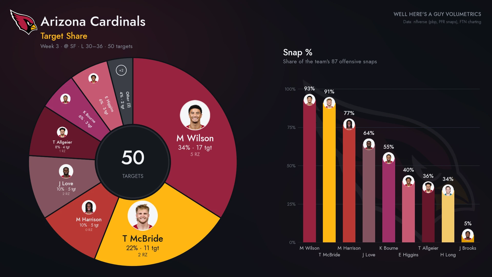
M Wilson is the clear No. 1 here with 34% of the targets (17). Don't panic on T McBride: 22% of the looks this week, but he was at 37% coming in and still played 91% of the snaps. I'd buy low. M Wilson also got 5 of the team's 11 red-zone targets, and that's where touchdowns come from. 50 targets total, so this team threw a ton. Don't expect every number here to repeat.
Why this take
- M Wilson: 34.0% target share (>= 28%)
- T McBride: 37% prior avg -> 22%; snaps 84% -> 91%
- M Wilson: 5 of 11 team red-zone targets
- 50 team targets (>= 45)
Atlanta Falcons

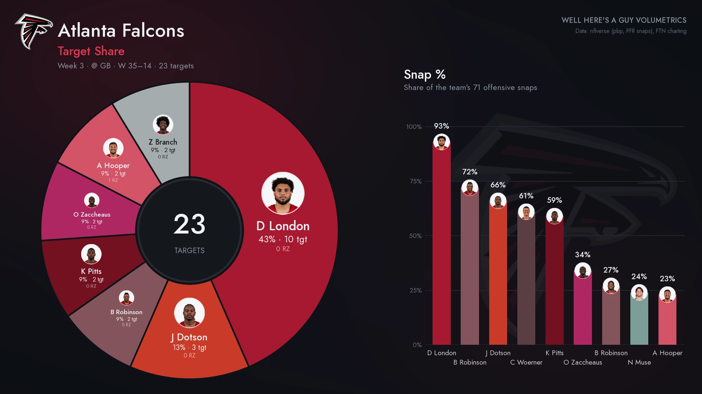
10 targets for D London. That's 43% of the pie, and it went for 9-194. Any time a guy gets over 40% of the looks, you expect a big day, and he delivered. B Robinson only saw 9% of the targets after averaging 33%, even on 72% of the snaps. The role is still there. This is a buy-low window.
Why this take
- D London: 10/23 = 43.5% target share (>= 40%)
- B Robinson: 33% prior avg -> 9%; snaps 64% -> 72%
Baltimore Ravens

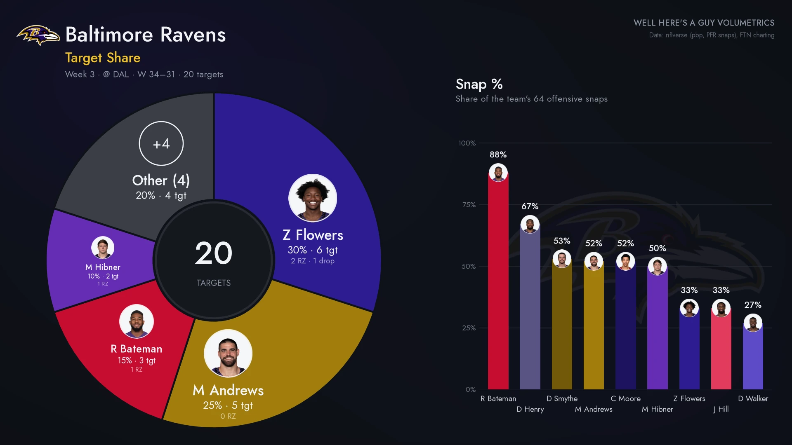
Z Flowers is the clear No. 1 here with 30% of the targets (6). Notice M Andrews earned 5 targets while only playing 52% of the snaps. That's a guy getting open when he's out there. Z Flowers also got 2 of the team's 5 red-zone targets, and that's where touchdowns come from. Only 20 targets to go around, so even a big share doesn't buy much.
Why this take
- Z Flowers: 30.0% target share (>= 28%)
- M Andrews: 25% target share on 52% snaps
- Z Flowers: 2 of 5 team red-zone targets
- 20 team targets (<= 22)
Buffalo Bills

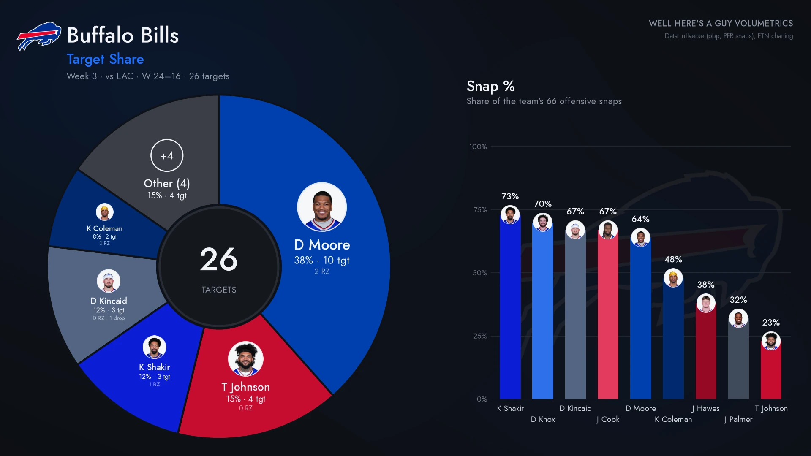
This passing game runs through D Moore: 10 targets, 38% of the share. D Kincaid only saw 12% of the targets after averaging 25%, even on 67% of the snaps. The role is still there. This is a buy-low window. D Moore also got 2 of the team's 3 red-zone targets, and that's where touchdowns come from. No wide receiver played more than 73% of the snaps, so a rotation is capping everybody's ceiling.
Why this take
- D Moore: 38.5% target share (>= 28%)
- D Kincaid: 25% prior avg -> 12%; snaps 69% -> 67%
- D Moore: 2 of 3 team red-zone targets
- max WR snap share 73% (< 75%)
Carolina Panthers

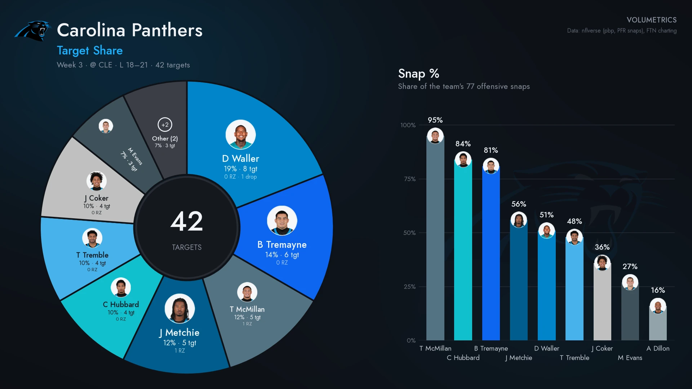
Don't panic on T McMillan: 12% of the looks this week, but he was at 27% coming in and still played 95% of the snaps. I'd buy low. D Waller pulled 19% of the targets on just 51% of the snaps. If that snap share climbs, he's a sneaky add. No one dominated here. 4 different players got 10%+ of the looks, which is fine for the offense and tough for fantasy.
Why this take
- T McMillan: 27% prior avg -> 12%; snaps 81% -> 95%
- D Waller: 19% target share on 51% snaps
- top share 19% (< 25%), 4 players >= 10%
Chicago Bears

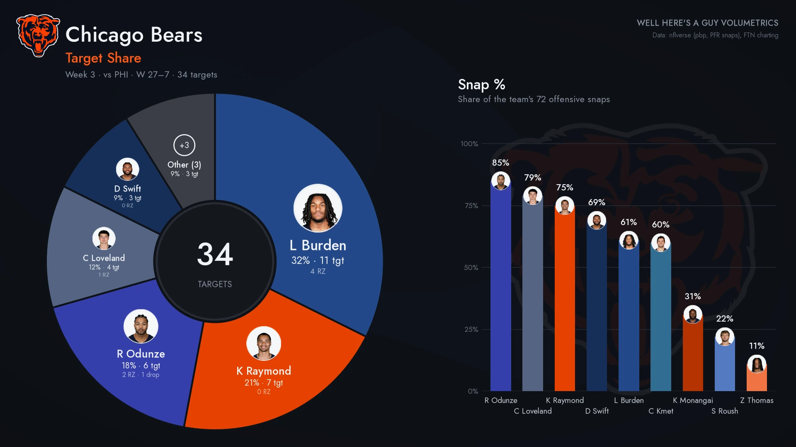
L Burden is the clear No. 1 here with 32% of the targets (11). L Burden also got 4 of the team's 7 red-zone targets, and that's where touchdowns come from.
Why this take
- L Burden: 32.4% target share (>= 28%)
- L Burden: 4 of 7 team red-zone targets
Cincinnati Bengals

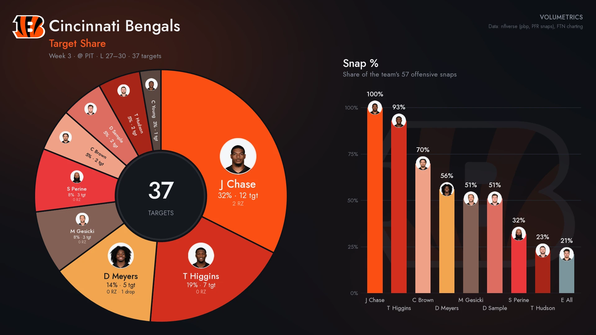
J Chase is the clear No. 1 here with 32% of the targets (12). J Chase also got both of the team's red-zone targets, and that's where touchdowns come from.
Why this take
- J Chase: 32.4% target share (>= 28%)
- J Chase: 2 of 2 team red-zone targets
Cleveland Browns

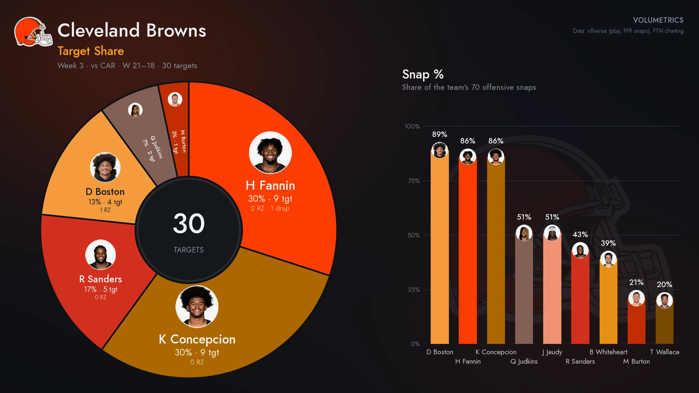
Look at how tight H Fannin and K Concepcion are: 9 targets to 9. H Fannin also got 2 of the team's 4 red-zone targets, and that's where touchdowns come from. R Sanders had 5 targets out of the backfield (17%). That's real PPR value.
Why this take
- H Fannin 30.0% vs K Concepcion 30.0% (gap <= 4%)
- H Fannin: 2 of 4 team red-zone targets
- R Sanders (RB): 17% target share
Dallas Cowboys

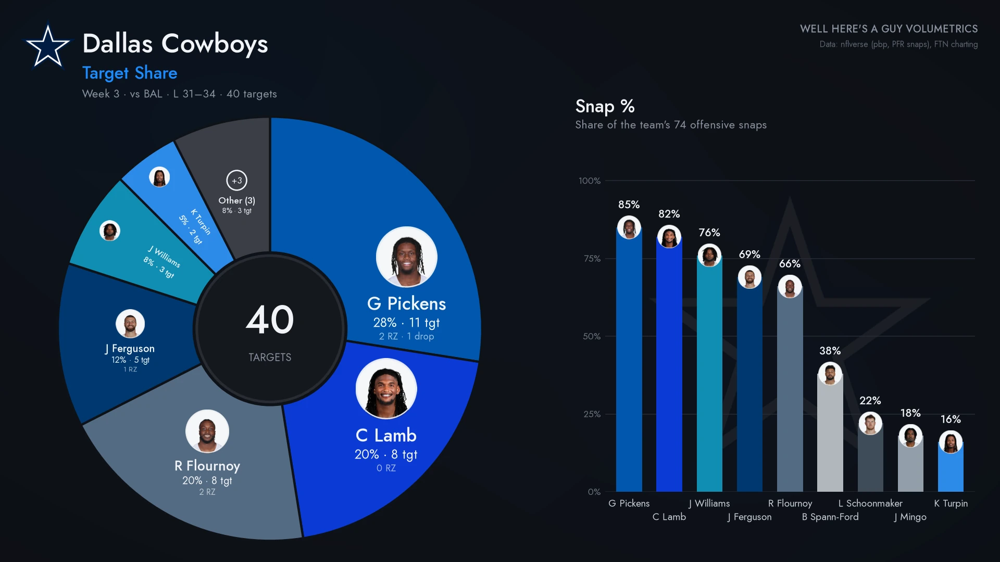
G Pickens led the way with 11 targets (28%), with C Lamb next at 8 (20%).
Why this take
- top two by targets
Denver Broncos

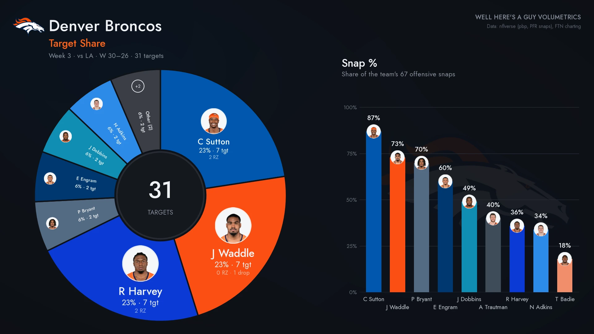
Look at how tight C Sutton and J Waddle are: 7 targets to 7. Notice R Harvey earned 7 targets while only playing 36% of the snaps. That's a guy getting open when he's out there.
Why this take
- C Sutton 22.6% vs J Waddle 22.6% (gap <= 4%)
- R Harvey: 23% target share on 36% snaps
Detroit Lions

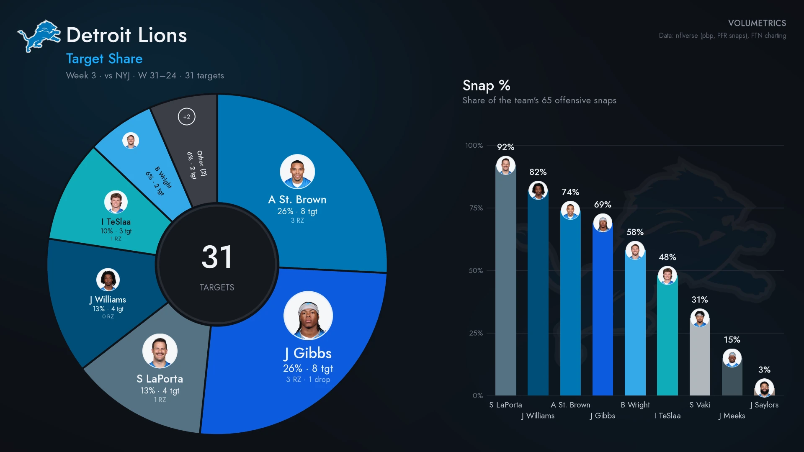
A St. Brown (26%) and J Gibbs (26%) are a lot closer than most people think.
Why this take
- A St. Brown 25.8% vs J Gibbs 25.8% (gap <= 4%)
Green Bay Packers

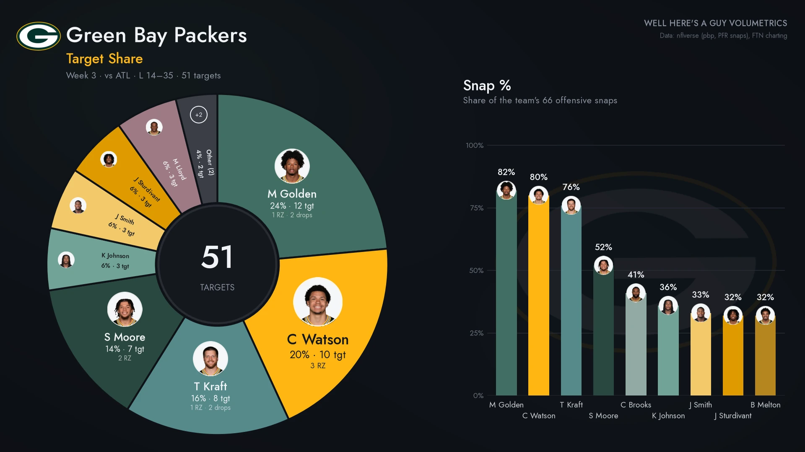
Look at how tight M Golden and C Watson are: 12 targets to 10. And C Watson had the bigger red-zone role (3 RZ to 1). A lot of targets spread around this week: 4 guys hit double-digit share and nobody topped 24%. M Golden did drop 2 balls, which is the kind of thing that costs you targets if it keeps up. 51 targets total, so this team threw a ton. Don't expect every number here to repeat.
Why this take
- M Golden 23.5% vs C Watson 19.6% (gap <= 4%)
- top share 24% (< 25%), 4 players >= 10%
- M Golden: 2 drops (FTN)
- 51 team targets (>= 45)
Houston Texans

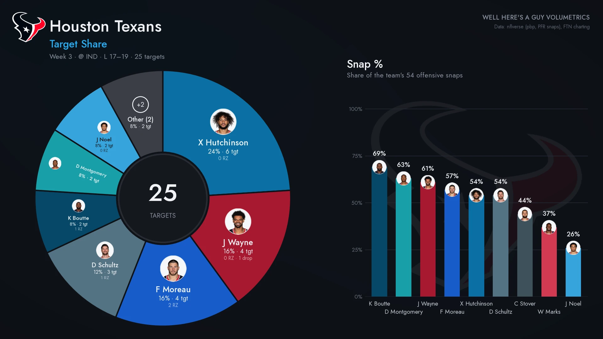
With N Collins not taking an offensive snap, F Moreau jumped to 16% of the targets after averaging 5%. If N Collins is out another week, F Moreau is a sneaky pickup. D Schultz only saw 12% of the targets after averaging 25%, even on 54% of the snaps. The role is still there. This is a buy-low window. This passing offense is a mess: no receiver cleared 75% of the snaps and nobody got a real share of the targets (top guy was 24%). Hard to trust anyone here until something changes. F Moreau also got 2 of the team's 4 red-zone targets, and that's where touchdowns come from.
Why this take
- N Collins averaged 27% share before, 0 offensive snaps this week; F Moreau share 5% -> 16%, snaps 36% -> 57%
- D Schultz: 25% prior avg -> 12%; snaps 67% -> 54%
- top share 24% (< 25%), 4 players >= 10%, max WR snaps 69%
- F Moreau: 2 of 4 team red-zone targets
Indianapolis Colts

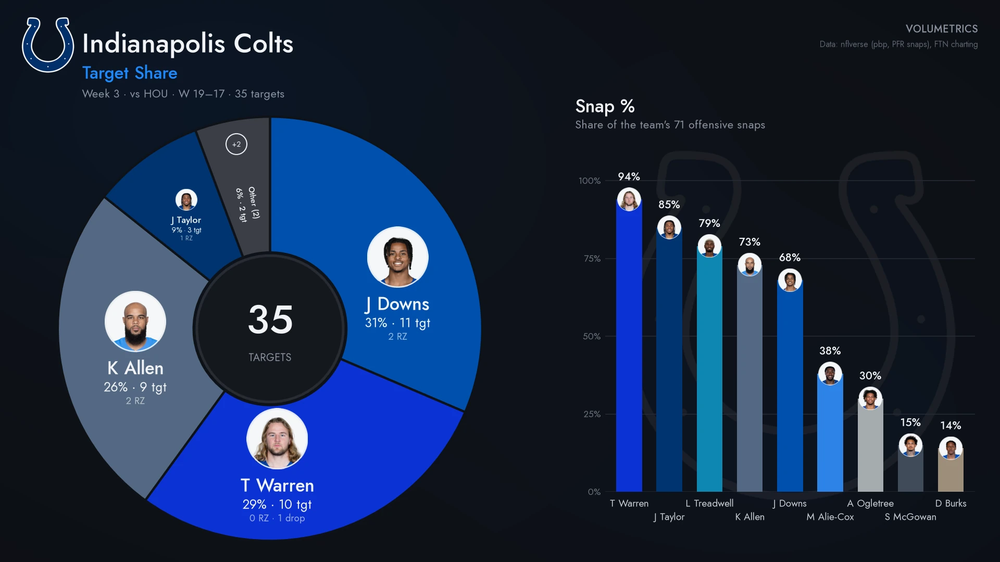
Look at how tight J Downs and T Warren are: 11 targets to 10. T Warren actually played more snaps (94% to 68%). J Downs also got 2 of the team's 5 red-zone targets, and that's where touchdowns come from.
Why this take
- J Downs 31.4% vs T Warren 28.6% (gap <= 4%)
- J Downs: 2 of 5 team red-zone targets
Jacksonville Jaguars

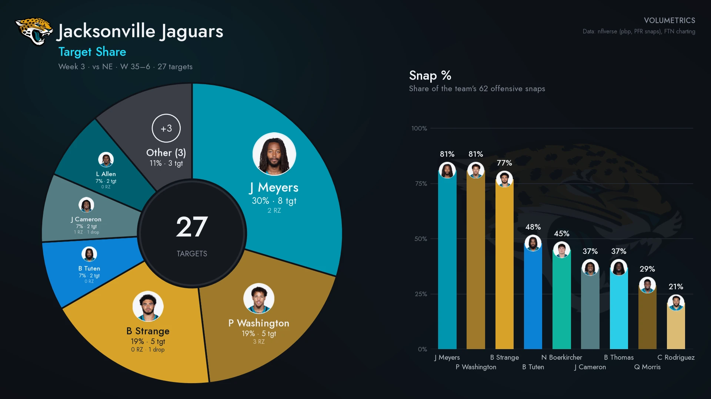
J Meyers is the clear No. 1 here with 30% of the targets (8). Don't panic on P Washington: 19% of the looks this week, but he was at 36% coming in and still played 81% of the snaps. I'd buy low.
Why this take
- J Meyers: 29.6% target share (>= 28%)
- P Washington: 36% prior avg -> 19%; snaps 71% -> 81%
Kansas City Chiefs

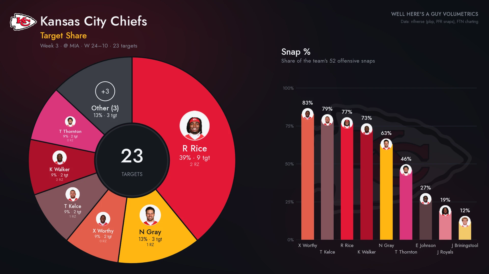
This passing game runs through R Rice: 9 targets, 39% of the share. Don't panic on X Worthy: 9% of the looks this week, but he was at 20% coming in and still played 83% of the snaps. I'd buy low.
Why this take
- R Rice: 39.1% target share (>= 28%)
- X Worthy: 20% prior avg -> 9%; snaps 82% -> 83%
Las Vegas Raiders

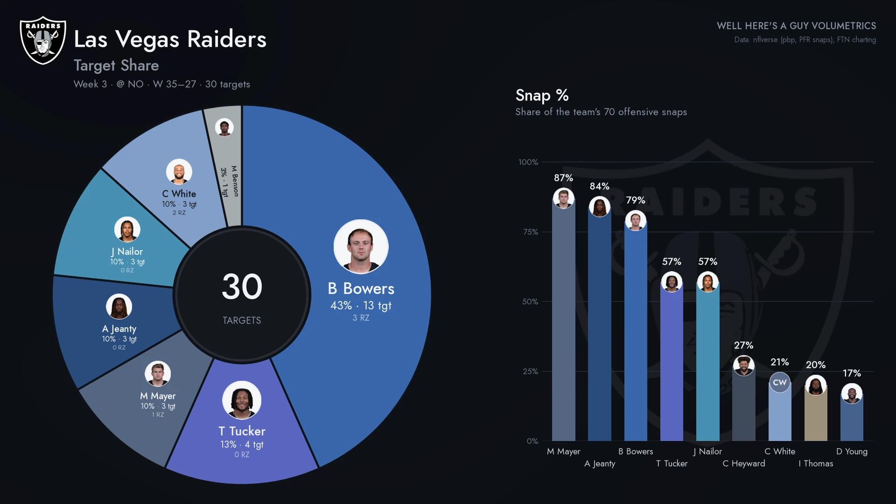
B Bowers ate 43% of the targets, 13 looks, and turned it into 10-116, 1 TD. When a receiver clears 40% of the targets, a monster game is usually coming, and that's exactly what we got. Don't panic on A Jeanty: 10% of the looks this week, but he was at 22% coming in and still played 84% of the snaps. I'd buy low. B Bowers also got 3 of the team's 6 red-zone targets, and that's where touchdowns come from. No wide receiver played more than 57% of the snaps, so a rotation is capping everybody's ceiling.
Why this take
- B Bowers: 13/30 = 43.3% target share (>= 40%)
- A Jeanty: 22% prior avg -> 10%; snaps 78% -> 84%
- B Bowers: 3 of 6 team red-zone targets
- max WR snap share 57% (< 75%)
Los Angeles Chargers

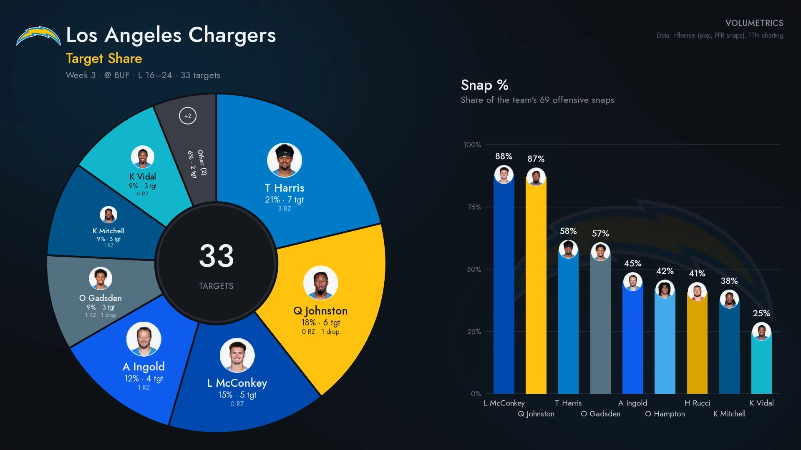
With D Njoku not taking an offensive snap, notice L McConkey was out there for 88% of the snaps, up from 48%. The targets haven't caught up yet, but if D Njoku is out another week, he's a sneaky pickup. Notice T Harris earned 7 targets while only playing 58% of the snaps. That's a guy getting open when he's out there. T Harris also got 3 of the team's 6 red-zone targets, and that's where touchdowns come from. A lot of targets spread around this week: 4 guys hit double-digit share and nobody topped 21%.
Why this take
- D Njoku averaged 15% share before, 0 offensive snaps this week; L McConkey share 19% -> 15%, snaps 48% -> 88%
- T Harris: 21% target share on 58% snaps
- T Harris: 3 of 6 team red-zone targets
- top share 21% (< 25%), 4 players >= 10%
Los Angeles Rams

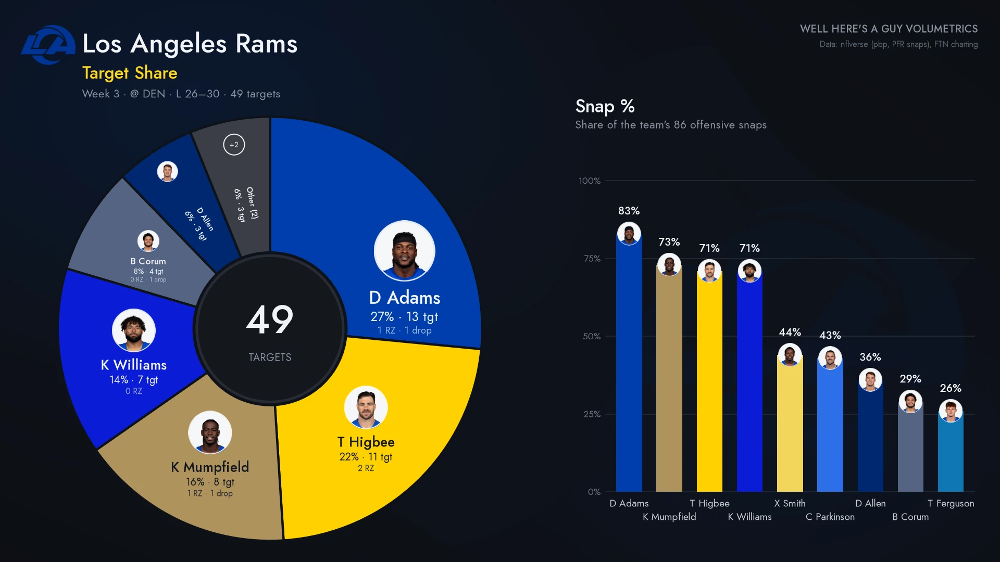
With P Nacua not taking an offensive snap, T Higbee jumped to 22% of the targets after averaging 4%. If P Nacua is out another week, T Higbee is a sneaky pickup. T Higbee also got 2 of the team's 5 red-zone targets, and that's where touchdowns come from. 49 targets total, so this team threw a ton. Don't expect every number here to repeat.
Why this take
- P Nacua averaged 33% share before, 0 offensive snaps this week; T Higbee share 4% -> 22%, snaps 23% -> 71%
- T Higbee: 2 of 5 team red-zone targets
- 49 team targets (>= 45)
Miami Dolphins

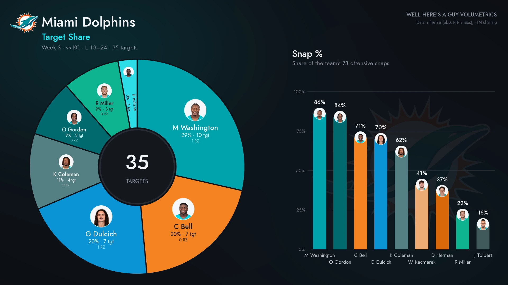
With C Douglas not taking an offensive snap, C Bell jumped to 20% of the targets after averaging 6%. If C Douglas is out another week, C Bell is a sneaky pickup. This passing game runs through M Washington: 10 targets, 29% of the share. D Achane fell to 3% of the targets and only played 5% of the snaps after averaging 81%, so something kept him off the field. Check the injury report before reading anything into it.
Why this take
- C Douglas averaged 19% share before, 0 offensive snaps this week; C Bell share 6% -> 20%, snaps 46% -> 71%
- M Washington: 28.6% target share (>= 28%)
- D Achane: 22% prior avg -> 3%; snaps 81% -> 5%
Minnesota Vikings

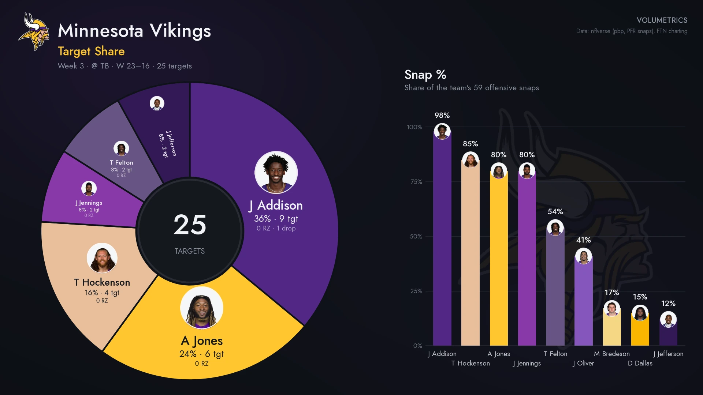
This passing game runs through J Addison: 9 targets, 36% of the share. Notice A Jones is trending up: 24% of the targets this week vs 2% coming in. J Jefferson fell to 8% of the targets and only played 12% of the snaps after averaging 96%, so something kept him off the field. Check the injury report before reading anything into it.
Why this take
- J Addison: 36.0% target share (>= 28%)
- A Jones: 2% prior avg -> 24% (+22%)
- J Jefferson: 35% prior avg -> 8%; snaps 96% -> 12%
New England Patriots

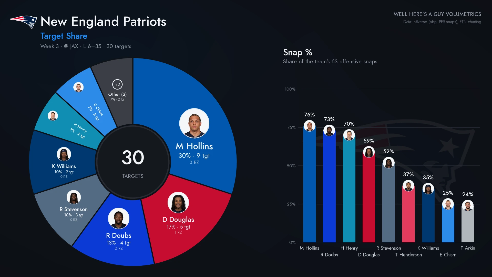
This passing game runs through M Hollins: 9 targets, 30% of the share. M Hollins also got 3 of the team's 5 red-zone targets, and that's where touchdowns come from.
Why this take
- M Hollins: 30.0% target share (>= 28%)
- M Hollins: 3 of 5 team red-zone targets
New Orleans Saints

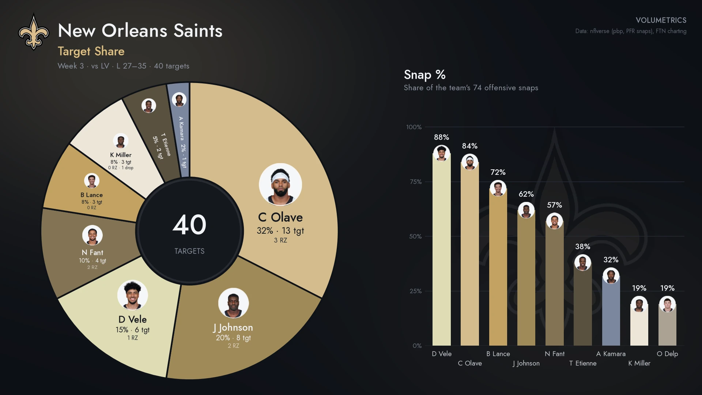
C Olave is the clear No. 1 here with 32% of the targets (13). J Johnson commanded 20% of the targets at tight end, and that's a weekly-starter role at the position.
Why this take
- C Olave: 32.5% target share (>= 28%)
- J Johnson (TE): 20% target share
New York Giants

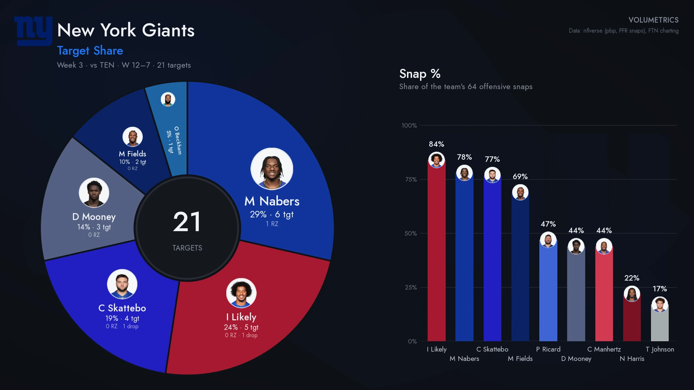
M Nabers is the clear No. 1 here with 29% of the targets (6). Notice C Skattebo is trending up: 19% of the targets this week vs 6% coming in. I Likely commanded 24% of the targets at tight end, and that's a weekly-starter role at the position.
Why this take
- M Nabers: 28.6% target share (>= 28%)
- C Skattebo: 6% prior avg -> 19% (+13%)
- I Likely (TE): 24% target share
New York Jets

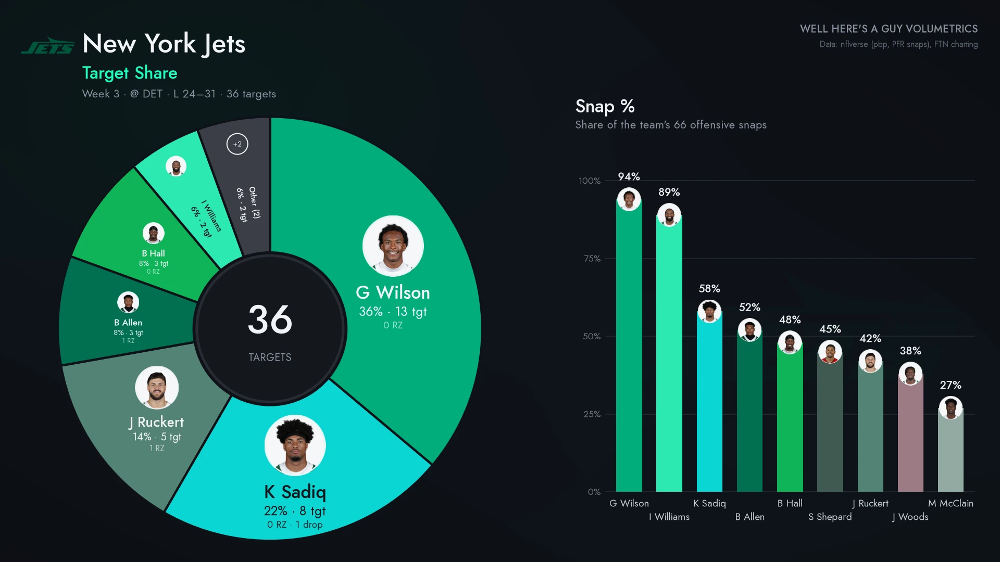
With A Mitchell not taking an offensive snap, K Sadiq jumped to 22% of the targets after averaging 11%. If A Mitchell is out another week, K Sadiq is a sneaky pickup. G Wilson is the clear No. 1 here with 36% of the targets (13). I Williams was on the field for 89% of the snaps and saw just 2 looks. The routes are there; the targets aren't.
Why this take
- A Mitchell averaged 23% share before, 0 offensive snaps this week; K Sadiq share 11% -> 22%, snaps 39% -> 58%
- G Wilson: 36.1% target share (>= 28%)
- I Williams: 89% snaps but 2 targets (6%)
Philadelphia Eagles

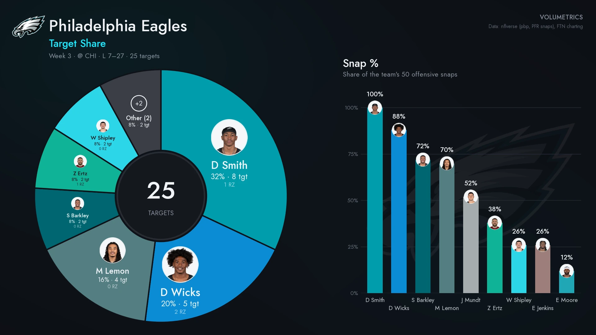
This passing game runs through D Smith: 8 targets, 32% of the share. D Wicks got 2 of the team's 4 red-zone targets, and that's where touchdowns come from.
Why this take
- D Smith: 32.0% target share (>= 28%)
- D Wicks: 2 of 4 team red-zone targets
Pittsburgh Steelers

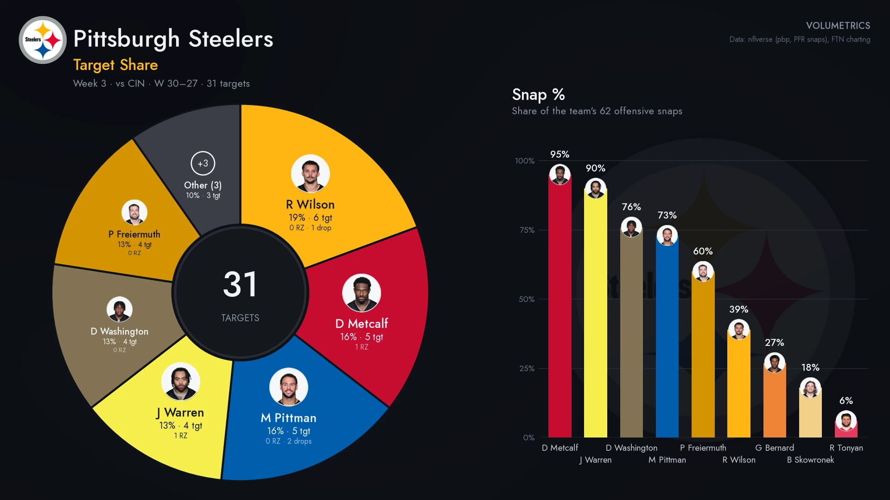
Notice R Wilson earned 6 targets while only playing 39% of the snaps. That's a guy getting open when he's out there. No one dominated here. 6 different players got 10%+ of the looks, which is fine for the offense and tough for fantasy. M Pittman did drop 2 balls, which is the kind of thing that costs you targets if it keeps up.
Why this take
- R Wilson: 19% target share on 39% snaps
- top share 19% (< 25%), 6 players >= 10%
- M Pittman: 2 drops (FTN)
San Francisco 49ers

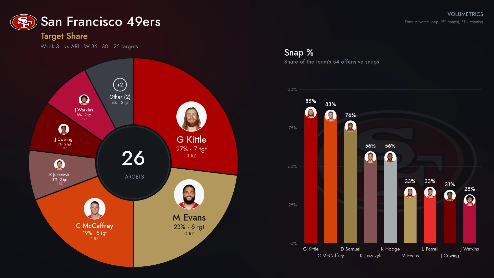
Look at how tight G Kittle and M Evans are: 7 targets to 6. Don't panic on D Samuel: 0% of the looks this week, but he was at 20% coming in and still played 76% of the snaps. I'd buy low. C McCaffrey had 5 targets out of the backfield (19%). That's real PPR value.
Why this take
- G Kittle 26.9% vs M Evans 23.1% (gap <= 4%)
- D Samuel: 20% prior avg -> 0%; snaps 51% -> 76%
- C McCaffrey (RB): 19% target share
Seattle Seahawks

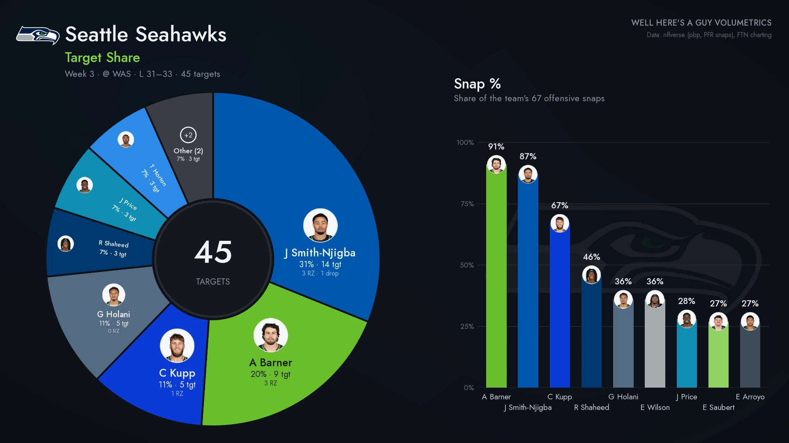
This passing game runs through J Smith-Njigba: 14 targets, 31% of the share. Notice A Barner is trending up: 20% of the targets this week vs 6% coming in. 45 targets total, so this team threw a ton. Don't expect every number here to repeat.
Why this take
- J Smith-Njigba: 31.1% target share (>= 28%)
- A Barner: 6% prior avg -> 20% (+14%)
- 45 team targets (>= 45)
Tampa Bay Buccaneers

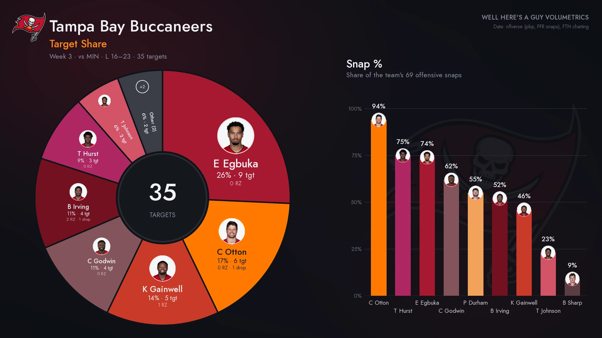
E Egbuka led the way with 9 targets (26%), with C Otton next at 6 (17%). B Irving got 2 of the team's 3 red-zone targets, and that's where touchdowns come from.
Why this take
- top two by targets
- B Irving: 2 of 3 team red-zone targets
Tennessee Titans

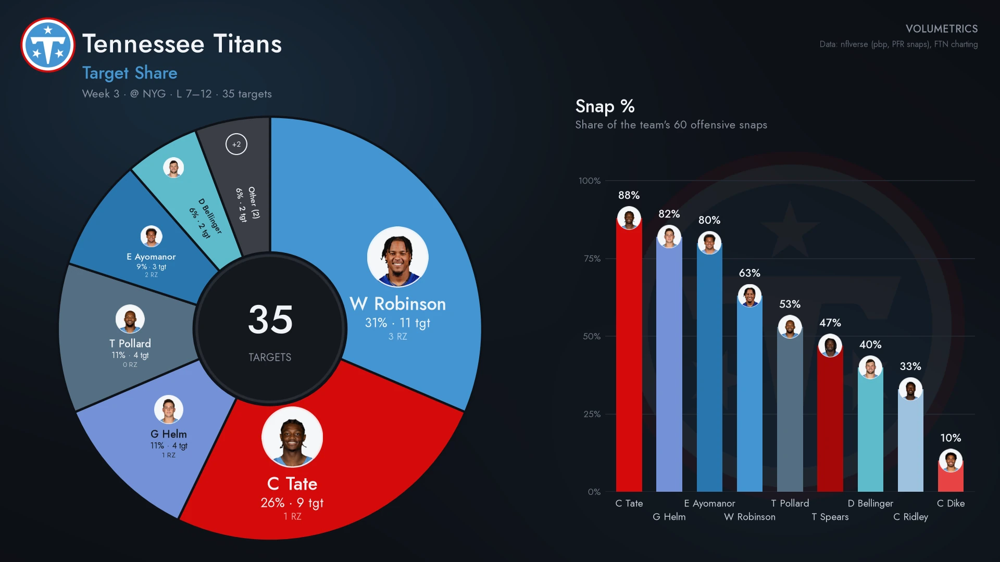
W Robinson is the clear No. 1 here with 31% of the targets (11). W Robinson also got 3 of the team's 7 red-zone targets, and that's where touchdowns come from. E Ayomanor was on the field for 80% of the snaps and saw just 3 looks. The routes are there; the targets aren't.
Why this take
- W Robinson: 31.4% target share (>= 28%)
- W Robinson: 3 of 7 team red-zone targets
- E Ayomanor: 80% snaps but 3 targets (9%)
Washington Commanders

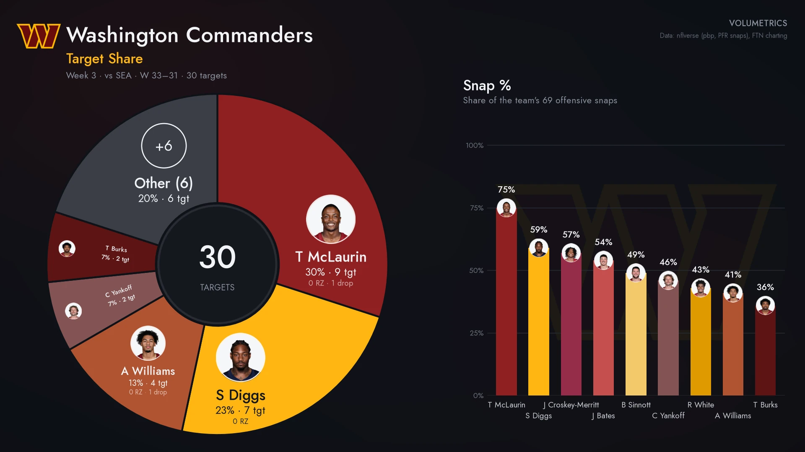
This passing game runs through T McLaurin: 9 targets, 30% of the share. Notice S Diggs earned 7 targets while only playing 59% of the snaps. That's a guy getting open when he's out there.
Why this take
- T McLaurin: 30.0% target share (>= 28%)
- S Diggs: 23% target share on 59% snaps
Week 3 backfields
| Top 8 rushers | ||||||
|---|---|---|---|---|---|---|
| 29 | 194 | 74% | 72% | 9 | 26.2 | |
| 26 | 89 | 72% | 67% | 8 | 24.2 | |
| 24 | 154 | 77% | 67% | 2 | 14.8 | |
| 23 | 68 | 77% | 85% | 2 | 16.2 | |
| 21 | 90 | 78% | 64% | 6 | 21.3 | |
| 20 | 99 | 77% | 69% | 10 | 30.8 | |
| 20 | 84 | 62% | 69% | 7 | 19.0 | |
| 20 | 60 | 65% | 77% | 5 | 17.8 |
Tap a back to jump to his team, or a column to re-sort. HVT = catches plus carries inside the 10. xFP = the PPR points an average back would score on that workload.
League view

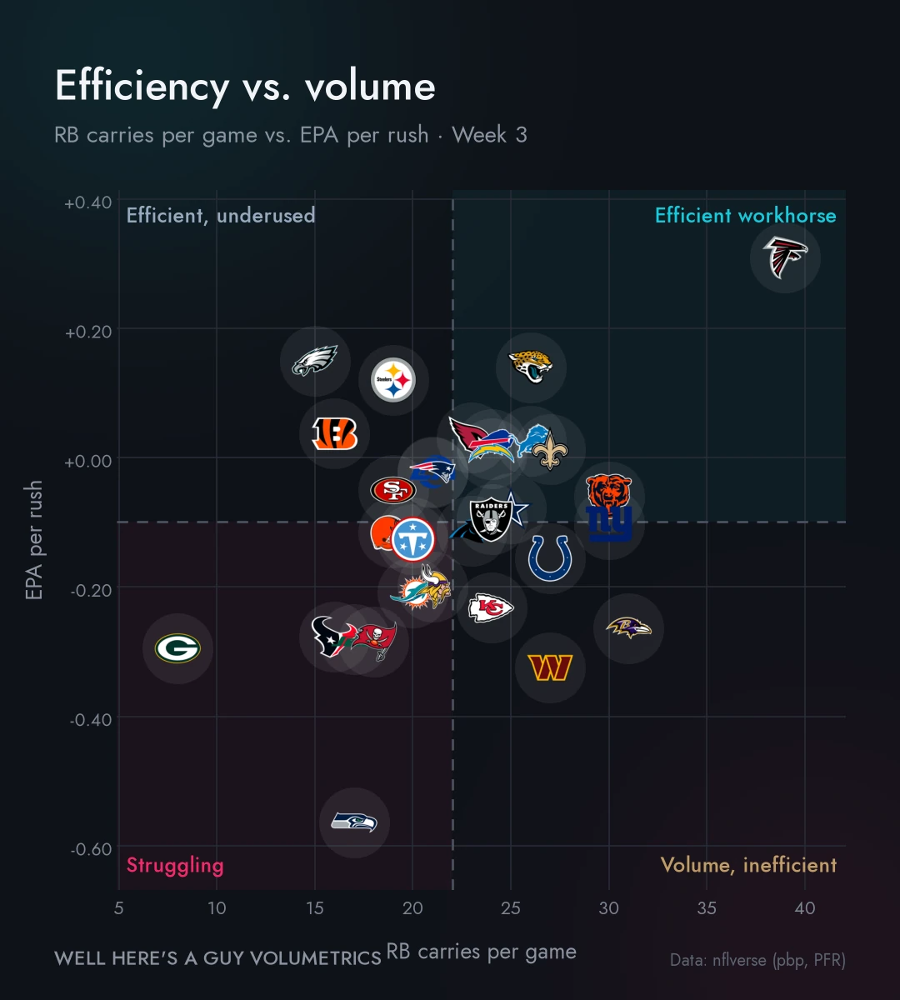

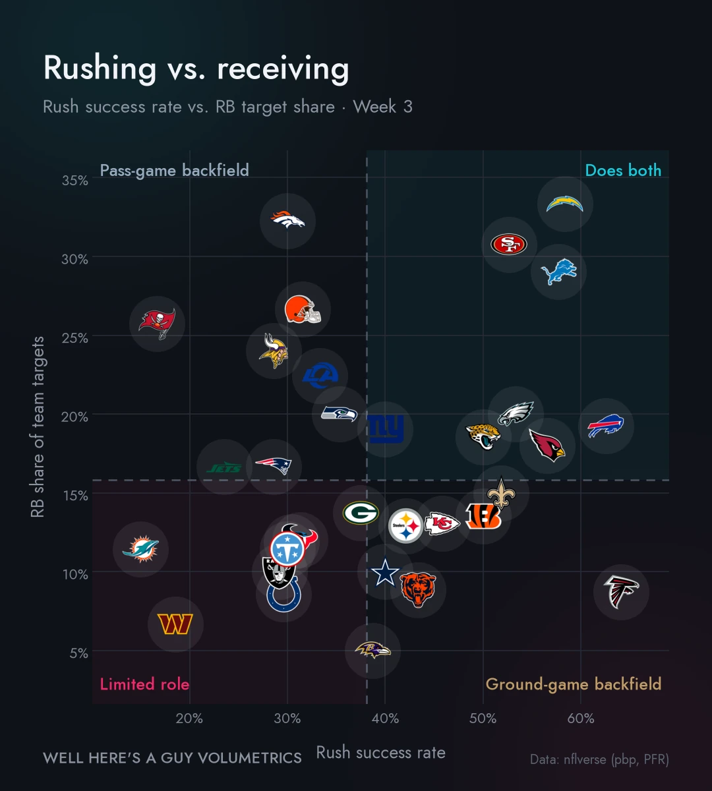

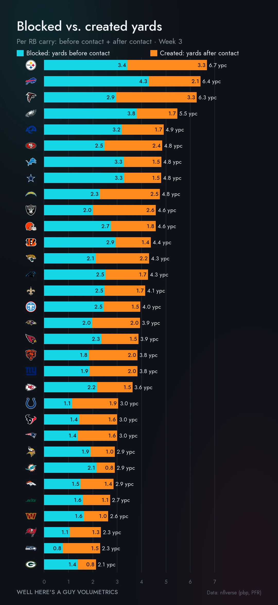

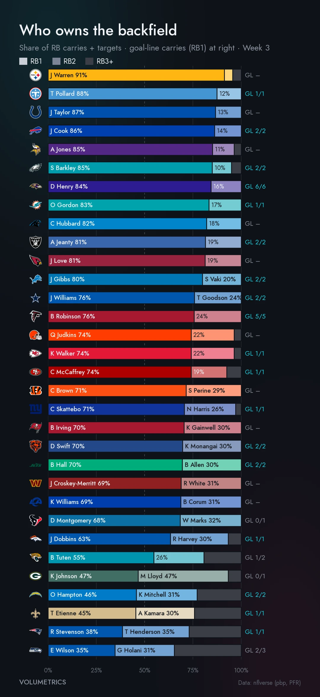
Team by team
Arizona Cardinals

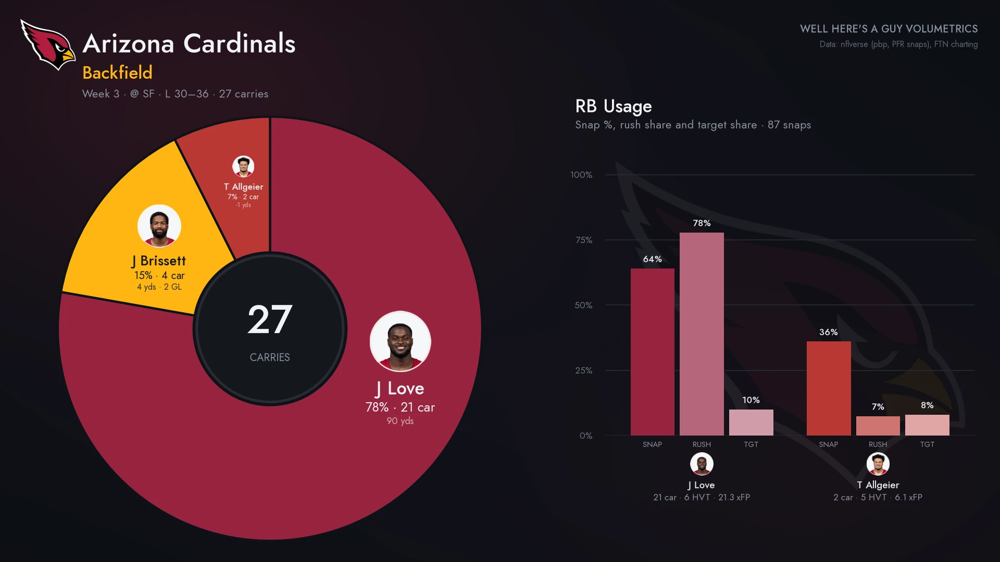
J Love is the lead back (21 carries, 78%) but not a workhorse: he played 64% of the snaps. T Allgeier's grip on the backfield is slipping: 57% of the carries early in this stretch, 7% lately. J Love had 6 high-value touches (catches plus carries inside the 10). Those are the touches that score fantasy points.
Why this take
- J Love: 78% rush share, 64% snaps
- T Allgeier: rush share 57% -> 7% over 3
- J Love: 6 high-value touches
Atlanta Falcons

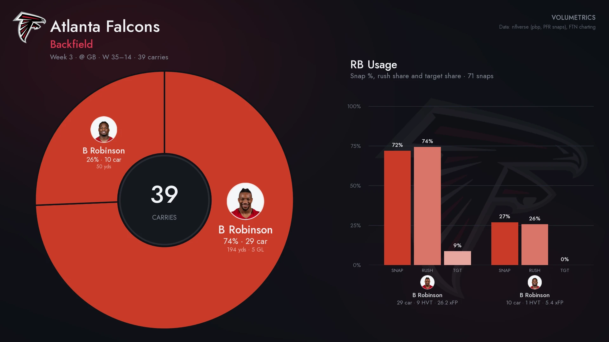
No committee here. B Robinson played 72% of the snaps and took 29 of 39 carries. That's been his job all 3 games (67% of the carries). B Robinson also got all 5 of the team's carries inside the 5. That's the touchdown role.
Why this take
- B Robinson: 72% snaps, 74% rush share
- B Robinson: 5 of 5 carries inside the 5
Baltimore Ravens

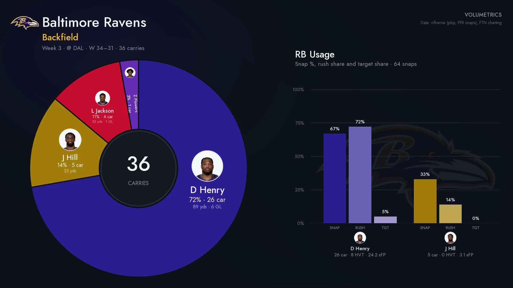
D Henry is the lead back (26 carries, 72%) but not a workhorse: he played 67% of the snaps and J Hill still got 5 carries. D Henry also got 6 of the team's 7 carries inside the 5. That's the touchdown role.
Why this take
- D Henry: 72% rush share, 67% snaps
- D Henry: 6 of 7 carries inside the 5
Buffalo Bills

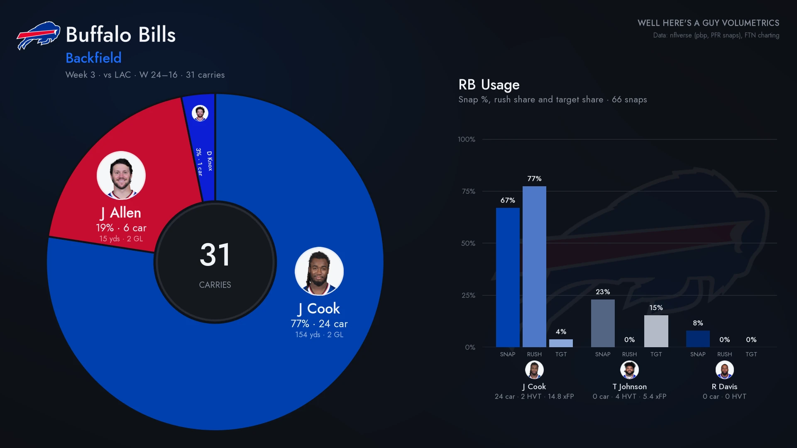
J Cook is the lead back (24 carries, 77%) but not a workhorse: he played 67% of the snaps. J Cook also got 2 of the team's 4 carries inside the 5. That's the touchdown role. T Johnson is the passing-down back: 4 targets (15% of the team's) on 23% of the snaps. That's real value in PPR.
Why this take
- J Cook: 77% rush share, 67% snaps
- J Cook: 2 of 4 carries inside the 5
- T Johnson: 15% target share, 0% rush share
Carolina Panthers

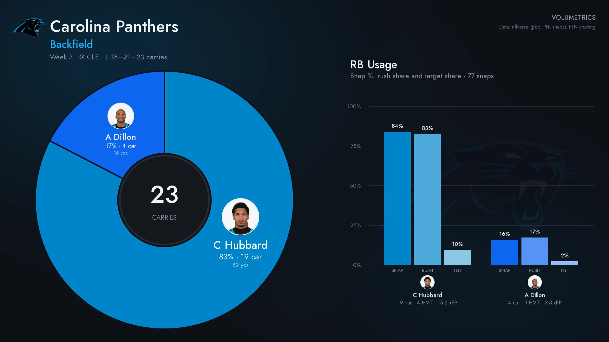
No committee here. C Hubbard played 84% of the snaps and took 19 of 23 carries. That's been his job all 3 games (66% of the carries).
Why this take
- C Hubbard: 84% snaps, 83% rush share
Chicago Bears

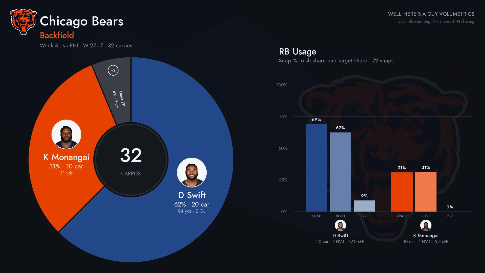
This is a committee: D Swift 62% of the carries, K Monangai 31%. D Swift has the passing-down edge with 3 targets to 0. Hard to trust either as more than a flex. D Swift also got 2 of the team's 3 carries inside the 5. That's the touchdown role.
Why this take
- D Swift 62% / K Monangai 31% of carries
- D Swift: 2 of 3 carries inside the 5
Cincinnati Bengals

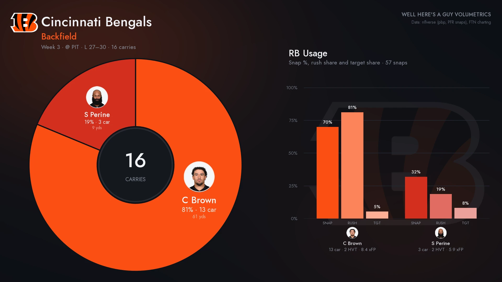
No committee here. C Brown played 70% of the snaps and took 13 of 16 carries. That's been his job all 3 games (78% of the carries).
Why this take
- C Brown: 70% snaps, 81% rush share
Cleveland Browns

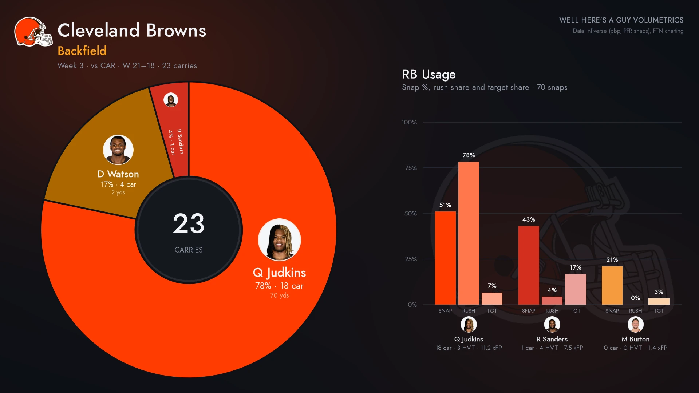
Q Judkins is the lead back (18 carries, 78%) but not a workhorse: he played 51% of the snaps. R Sanders is the passing-down back: 5 targets (17% of the team's) on 43% of the snaps. That's real value in PPR.
Why this take
- Q Judkins: 78% rush share, 51% snaps
- R Sanders: 17% target share, 4% rush share
Dallas Cowboys

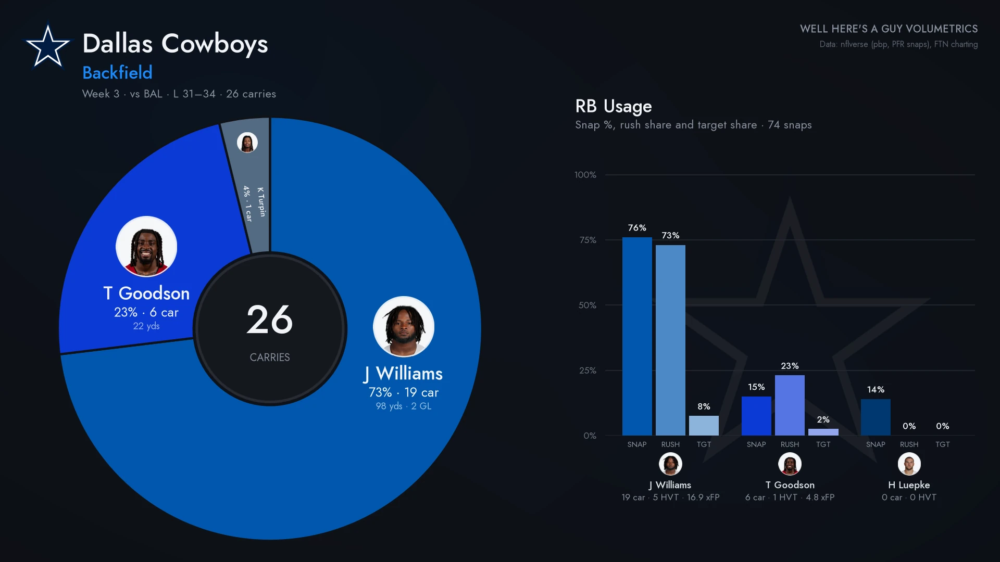
No committee here. J Williams played 76% of the snaps and took 19 of 26 carries. That's been his job all 3 games (72% of the carries). J Williams also got both of the team's carries inside the 5. That's the touchdown role.
Why this take
- J Williams: 76% snaps, 73% rush share
- J Williams: 2 of 2 carries inside the 5
Denver Broncos

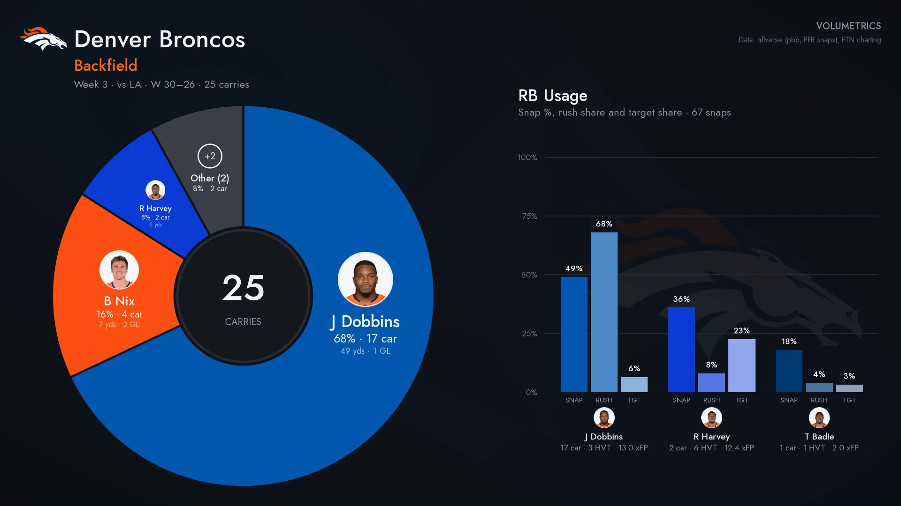
J Dobbins is the lead back (17 carries, 68%) but not a workhorse: he played 49% of the snaps. R Harvey is the passing-down back: 7 targets (23% of the team's) on 36% of the snaps. That's real value in PPR. R Harvey had 6 high-value touches (catches plus carries inside the 10). Those are the touches that score fantasy points.
Why this take
- J Dobbins: 68% rush share, 49% snaps
- R Harvey: 23% target share, 8% rush share
- R Harvey: 6 high-value touches
Detroit Lions

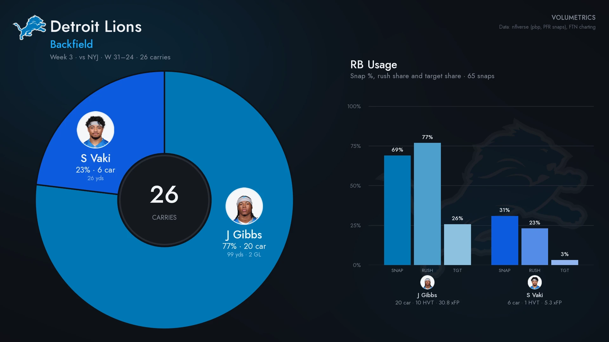
J Gibbs is the lead back (20 carries, 77%) but not a workhorse: he played 69% of the snaps and S Vaki still got 6 carries. J Gibbs also got both of the team's carries inside the 5. That's the touchdown role.
Why this take
- J Gibbs: 77% rush share, 69% snaps
- J Gibbs: 2 of 2 carries inside the 5
Green Bay Packers

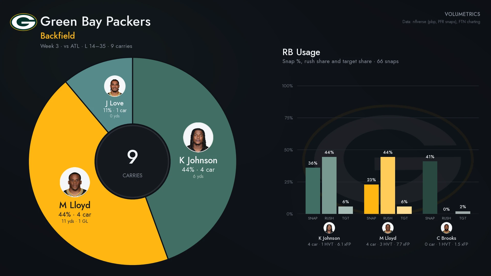
This is a committee: K Johnson 44% of the carries, M Lloyd 44%. Hard to trust either as more than a flex.
Why this take
- K Johnson 44% / M Lloyd 44% of carries
Houston Texans

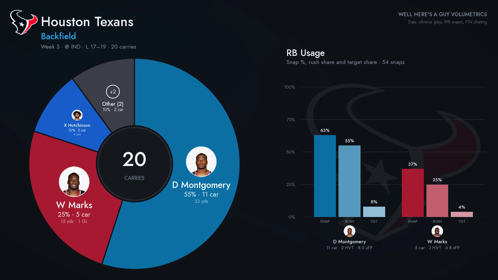
D Montgomery is the lead back (11 carries, 55%) but not a workhorse: he played 63% of the snaps and W Marks still got 5 carries.
Why this take
- D Montgomery: 55% rush share, 63% snaps
Indianapolis Colts

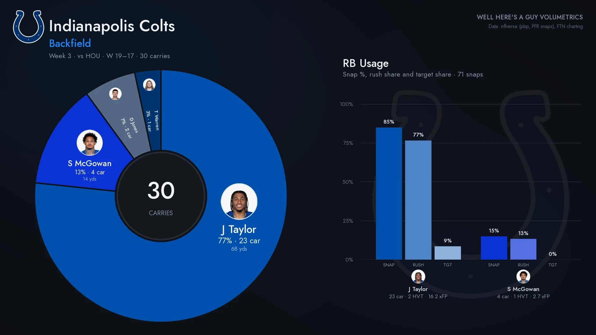
J Taylor is a true workhorse: 85% of the snaps and 77% of the carries (23). That's been his job all 3 games (84% of the carries).
Why this take
- J Taylor: 85% snaps, 77% rush share
Jacksonville Jaguars

B Tuten is the lead back (15 carries, 54%) but not a workhorse: he played 48% of the snaps and C Rodriguez still got 8 carries.
Why this take
- B Tuten: 54% rush share, 48% snaps
Kansas City Chiefs

K Walker is a true workhorse: 73% of the snaps and 75% of the carries (18). That's been his job all 3 games (79% of the carries).
Why this take
- K Walker: 73% snaps, 75% rush share
Las Vegas Raiders

A Jeanty is a true workhorse: 84% of the snaps and 79% of the carries (19). That's been his job all 3 games (77% of the carries). A Jeanty also got both of the team's carries inside the 5. That's the touchdown role.
Why this take
- A Jeanty: 84% snaps, 79% rush share
- A Jeanty: 2 of 2 carries inside the 5
Los Angeles Chargers

This is a committee: O Hampton 58% of the carries, K Mitchell 31%. K Mitchell has the passing-down edge with 3 targets to 1. Hard to trust either as more than a flex. O Hampton also got both of the team's carries inside the 5. That's the touchdown role. A Ingold is the passing-down back: 4 targets (12% of the team's) on 45% of the snaps. That's real value in PPR.
Why this take
- O Hampton 58% / K Mitchell 31% of carries
- O Hampton: 2 of 2 carries inside the 5
- A Ingold: 12% target share, 0% rush share
Los Angeles Rams

No committee here. K Williams played 71% of the snaps and took 15 of 22 carries. K Williams had 6 high-value touches (catches plus carries inside the 10). Those are the touches that score fantasy points.
Why this take
- K Williams: 71% snaps, 68% rush share
- K Williams: 6 high-value touches
Miami Dolphins

O Gordon is a true workhorse: 84% of the snaps and 68% of the carries (17). D Achane's grip on the backfield is slipping: 85% of the carries early in this stretch, 12% lately.
Why this take
- O Gordon: 84% snaps, 68% rush share
- D Achane: rush share 85% -> 12% over 3
Minnesota Vikings

J Mason didn't play in Week 3 after taking 54% of the carries early in this stretch. A Jones took 81% of the carries in Week 3. If J Mason sits again, A Jones is the add. A Jones is a true workhorse: 80% of the snaps and 81% of the carries (17). That's been his job all 3 games (68% of the carries).
Why this take
- J Mason: 54% rush share early, missed [3]
- A Jones: 80% snaps, 81% rush share
New England Patriots

This is a committee: T Henderson 35% of the carries, R Stevenson 30%. R Stevenson has the passing-down edge with 3 targets to 1. Hard to trust either as more than a flex.
Why this take
- T Henderson 35% / R Stevenson 30% of carries
New Orleans Saints

This is a committee: T Etienne 48% of the carries, A Kamara 33%. T Etienne has the passing-down edge with 2 targets to 1. Hard to trust either as more than a flex. K Miller's grip on the backfield is slipping: 39% of the carries early in this stretch, 15% lately.
Why this take
- T Etienne 48% / A Kamara 33% of carries
- K Miller: rush share 39% -> 15% over 3
New York Giants

C Skattebo is the lead back (20 carries, 65%) but not a workhorse: he played 77% of the snaps and N Harris still got 9 carries.
Why this take
- C Skattebo: 65% rush share, 77% snaps
New York Jets

B Hall is the lead back (13 carries, 76%) but not a workhorse: he played 48% of the snaps and B Allen still got 4 carries. B Hall also got both of the team's carries inside the 5. That's the touchdown role.
Why this take
- B Hall: 76% rush share, 48% snaps
- B Hall: 2 of 2 carries inside the 5
Philadelphia Eagles

S Barkley is a true workhorse: 72% of the snaps and 94% of the carries (15). S Barkley also got 2 of the team's 3 carries inside the 5. That's the touchdown role.
Why this take
- S Barkley: 72% snaps, 94% rush share
- S Barkley: 2 of 3 carries inside the 5
Pittsburgh Steelers

R Dowdle didn't play in Week 3 after taking 44% of the carries early in this stretch. J Warren took 85% of the carries in Week 3. If R Dowdle sits again, J Warren is the add. J Warren is a true workhorse: 90% of the snaps and 85% of the carries (17). That's been his job all 3 games (64% of the carries).
Why this take
- R Dowdle: 44% rush share early, missed [3]
- J Warren: 90% snaps, 85% rush share
San Francisco 49ers

C McCaffrey is a true workhorse: 83% of the snaps and 71% of the carries (15). K Black's grip on the backfield is slipping: 50% of the carries early in this stretch, 19% lately.
Why this take
- C McCaffrey: 83% snaps, 71% rush share
- K Black: rush share 50% -> 19% over 3
Seattle Seahawks

E Wilson is the lead back (9 carries, 53%) but not a workhorse: he played 36% of the snaps and J Price still got 5 carries. E Wilson also got 2 of the team's 3 carries inside the 5. That's the touchdown role. J Price's grip on the backfield is slipping: 50% of the carries early in this stretch, 29% lately. G Holani is the passing-down back: 5 targets (11% of the team's) on 36% of the snaps. That's real value in PPR.
Why this take
- E Wilson: 53% rush share, 36% snaps
- E Wilson: 2 of 3 carries inside the 5
- J Price: rush share 50% -> 29% over 3
- G Holani: 11% target share, 18% rush share
Tampa Bay Buccaneers

B Irving is the lead back (15 carries, 83%) but not a workhorse: he played 52% of the snaps and K Gainwell still got 3 carries. K Gainwell is the passing-down back: 5 targets (14% of the team's) on 46% of the snaps. That's real value in PPR.
Why this take
- B Irving: 83% rush share, 52% snaps
- K Gainwell: 14% target share, 17% rush share
Tennessee Titans

T Pollard is the lead back (17 carries, 81%) but not a workhorse: he played 53% of the snaps and T Spears still got 3 carries. T Pollard had 6 high-value touches (catches plus carries inside the 10). Those are the touches that score fantasy points.
Why this take
- T Pollard: 81% rush share, 53% snaps
- T Pollard: 6 high-value touches
Washington Commanders

J Croskey-Merritt is the lead back (19 carries, 68%) but not a workhorse: he played 57% of the snaps and R White still got 8 carries.
Why this take
- J Croskey-Merritt: 68% rush share, 57% snaps
Trends: each team's last 3 games
Top target shares, last 3 games
| J Smith-Njigba | 38% | |
| D Smith | 33% | |
| A St. Brown | 32% | |
| P Washington | 30% | |
| T McBride | 30% |
Arizona Cardinals

| Target share | Wk 1 | Wk 2 | Wk 3 | All |
|---|---|---|---|---|
| T McBride | 35% | 38% | 22% | 30% |
| M Wilson | 19% | 27% | 34% | 27% |
| K Bourne | 22% | 12% | 6% | 12% |
| J Love | 11% | 12% | 10% | 11% |
| M Harrison | 8% | 4% | 10% | 8% |
34 targets for T McBride over the last 3, 30% of the pie, and at least 22% every single week. I'm riding this. Notice M Wilson's share climbing: 19% to 34% over the last 3 games. That's a role that's growing. K Bourne's share has slipped from 22% to 6%, but he's still playing 55% of the snaps. The role is there. This is a buy-low window. T McBride also has 8 of the team's 20 red-zone targets over the last 3. That's the touchdown role.
Why this take
- T McBride: 30.1% share over 3 games, never below 22%
- M Wilson: 19% share in the first games of the window -> 34% in the latest
- K Bourne: share 22% -> 6%; snaps 67% -> 55%
- T McBride: 8 of 20 team RZ targets over 3
Atlanta Falcons

| Target share | Wk 1 | Wk 2 | Wk 3 | All |
|---|---|---|---|---|
| D London | 21% | 16% | 43% | 26% |
| B Robinson | 53% | 13% | 9% | 22% |
| J Dotson | 16% | 13% | 13% | 14% |
| K Pitts | 5% | 10% | 9% | 8% |
| O Zaccheaus | 5% | 10% | 9% | 8% |
D London leads this team at 26% of the targets over the last 3, but it's swung anywhere from 16% to 43% week to week. Expect some boom and some bust. B Robinson's share has slipped from 53% to 9%, but he's still playing 72% of the snaps. The role is there. This is a buy-low window. Only about 24 targets a game over the last 3, which caps everyone's ceiling.
Why this take
- D London: 26.0% share over 3; weekly range 16%-43%
- B Robinson: share 53% -> 9%; snaps 77% -> 72%
- 24.3 team targets per game over 3
Baltimore Ravens

| Target share | Wk 1 | Wk 2 | Wk 3 | All |
|---|---|---|---|---|
| M Andrews | 25% | 24% | 25% | 25% |
| R Bateman | 4% | 31% | 15% | 18% |
| Z Flowers | 25% | – | 30% | 16% |
| C Moore | 8% | 10% | 5% | 8% |
| D Henry | 4% | 10% | 5% | 7% |
R Bateman is trending the right way: 4% of the targets early in this stretch, 15% in the last two games. Get him before everyone notices. Only about 24 targets a game over the last 3, which caps everyone's ceiling.
Why this take
- R Bateman: 4% share in the first games of the window -> 15% in the latest
- 24.3 team targets per game over 3
Buffalo Bills

| Target share | Wk 1 | Wk 2 | Wk 3 | All |
|---|---|---|---|---|
| D Moore | 29% | 0% | 38% | 22% |
| D Kincaid | 21% | 29% | 12% | 21% |
| K Shakir | 21% | 21% | 12% | 18% |
| K Coleman | 4% | 21% | 8% | 11% |
| J Cook | 14% | 11% | 4% | 10% |
D Moore is trending the right way: 29% of the targets early in this stretch, 38% in the last two games. Get him before everyone notices. D Kincaid's share has slipped from 21% to 12%, but he's still playing 67% of the snaps. The role is there. This is a buy-low window. Notice K Shakir's snaps went from 53% to 73% over this stretch. The targets usually follow the snaps. K Shakir also has 4 of the team's 11 red-zone targets over the last 3. That's the touchdown role.
Why this take
- D Moore: 29% share in the first games of the window -> 38% in the latest
- D Kincaid: share 21% -> 12%; snaps 72% -> 67%
- K Shakir: snaps 53% -> 73%
- K Shakir: 4 of 11 team RZ targets over 3
Carolina Panthers

| Target share | Wk 1 | Wk 2 | Wk 3 | All |
|---|---|---|---|---|
| T McMillan | 24% | 31% | 12% | 21% |
| J Coker | 26% | 28% | 10% | 20% |
| D Waller | 6% | 9% | 19% | 12% |
| T Tremble | 15% | 6% | 10% | 10% |
| C Hubbard | 9% | 6% | 10% | 8% |
D Waller is trending the right way: 6% of the targets early in this stretch, 19% in the last two games. His snaps went from 35% to 51% too. Get him before everyone notices. T McMillan (21%) and J Coker (20%) are basically splitting the top role over the last 3 games. Notice B Tremayne's snaps went from 18% to 81% over this stretch. The targets usually follow the snaps.
Why this take
- D Waller: 6% share in the first games of the window -> 19% in the latest
- T McMillan 21.3% vs J Coker 20.4% over 3
- B Tremayne: snaps 18% -> 81%
Chicago Bears

| Target share | Wk 1 | Wk 2 | Wk 3 | All |
|---|---|---|---|---|
| L Burden | 19% | 23% | 32% | 26% |
| K Raymond | 35% | 17% | 21% | 23% |
| R Odunze | 12% | 13% | 18% | 14% |
| C Loveland | 8% | 10% | 12% | 10% |
| D Swift | 4% | 17% | 9% | 10% |
L Burden is the clear No. 1 over the last 3 games: 23 targets, 26% of the share. K Raymond's share has slipped from 35% to 21%, but he's still playing 75% of the snaps. The role is there. This is a buy-low window. Notice R Odunze's snaps went from 48% to 85% over this stretch. The targets usually follow the snaps.
Why this take
- L Burden: 25.6% share over 3 games
- K Raymond: share 35% -> 21%; snaps 60% -> 75%
- R Odunze: snaps 48% -> 85%
Cincinnati Bengals

| Target share | Wk 1 | Wk 2 | Wk 3 | All |
|---|---|---|---|---|
| J Chase | 12% | 29% | 32% | 25% |
| T Higgins | 18% | 32% | 19% | 23% |
| C Brown | 18% | 16% | 5% | 13% |
| M Gesicki | 21% | 0% | 8% | 10% |
| S Perine | 9% | 3% | 8% | 7% |
J Chase is trending the right way: 12% of the targets early in this stretch, 32% in the last two games. Get him before everyone notices. M Gesicki's share has slipped from 21% to 8%, but he's still playing 51% of the snaps. The role is there. This is a buy-low window. Notice T Higgins' snaps went from 72% to 93% over this stretch. The targets usually follow the snaps. J Chase also has 4 of the team's 9 red-zone targets over the last 3. That's the touchdown role.
Why this take
- J Chase: 12% share in the first games of the window -> 32% in the latest
- M Gesicki: share 21% -> 8%; snaps 33% -> 51%
- T Higgins: snaps 72% -> 93%
- J Chase: 4 of 9 team RZ targets over 3
Cleveland Browns

| Target share | Wk 1 | Wk 2 | Wk 3 | All |
|---|---|---|---|---|
| K Concepcion | 23% | 20% | 30% | 24% |
| H Fannin | 14% | 20% | 30% | 22% |
| D Boston | 18% | 23% | 13% | 18% |
| Q Judkins | 9% | 17% | 7% | 11% |
| R Sanders | 14% | 3% | 17% | 11% |
H Fannin is trending the right way: 14% of the targets early in this stretch, 30% in the last two games. Get him before everyone notices. J Jeudy's share has slipped from 18% to 0%, but he's still playing 51% of the snaps. The role is there. This is a buy-low window. Notice K Concepcion's snaps went from 69% to 86% over this stretch. The targets usually follow the snaps.
Why this take
- H Fannin: 14% share in the first games of the window -> 30% in the latest
- J Jeudy: share 18% -> 0%; snaps 63% -> 51%
- K Concepcion: snaps 69% -> 86%
Dallas Cowboys

| Target share | Wk 1 | Wk 2 | Wk 3 | All |
|---|---|---|---|---|
| G Pickens | 20% | 26% | 28% | 25% |
| C Lamb | 27% | 29% | 20% | 25% |
| R Flournoy | 13% | 19% | 20% | 18% |
| J Williams | 17% | 13% | 8% | 12% |
| J Ferguson | 7% | 13% | 12% | 11% |
G Pickens (25%) and C Lamb (25%) are basically splitting the top role over the last 3 games.
Why this take
- G Pickens 24.8% vs C Lamb 24.8% over 3
Denver Broncos

| Target share | Wk 1 | Wk 2 | Wk 3 | All |
|---|---|---|---|---|
| J Waddle | 11% | 34% | 23% | 23% |
| C Sutton | 19% | 14% | 23% | 18% |
| R Harvey | 15% | – | 23% | 13% |
| P Bryant | 22% | 3% | 6% | 10% |
| E Engram | 19% | 3% | 6% | 9% |
Notice J Waddle's share climbing: 11% to 23% over the last 3 games. That's a role that's growing. P Bryant's share has slipped from 22% to 6%, but he's still playing 70% of the snaps. The role is there. This is a buy-low window.
Why this take
- J Waddle: 11% share in the first games of the window -> 23% in the latest
- P Bryant: share 22% -> 6%; snaps 59% -> 70%
Detroit Lions

| Target share | Wk 1 | Wk 2 | Wk 3 | All |
|---|---|---|---|---|
| A St. Brown | 36% | 34% | 26% | 32% |
| J Gibbs | 13% | 21% | 26% | 19% |
| S LaPorta | 21% | 18% | 13% | 18% |
| J Williams | 23% | 11% | 13% | 16% |
| I TeSlaa | 3% | 13% | 10% | 8% |
A St. Brown owns this offense: 32% of the targets over the last 3 games, and he hasn't dipped below 26% in any of them. That's as safe as it gets. J Gibbs is trending the right way: 13% of the targets early in this stretch, 26% in the last two games. Get him before everyone notices. J Williams' share has slipped from 23% to 13%, but he's still playing 82% of the snaps. The role is there. This is a buy-low window. A St. Brown also has 9 of the team's 21 red-zone targets over the last 3. That's the touchdown role.
Why this take
- A St. Brown: 32.4% share over 3 games, never below 26%
- J Gibbs: 13% share in the first games of the window -> 26% in the latest
- J Williams: share 23% -> 13%; snaps 84% -> 82%
- A St. Brown: 9 of 21 team RZ targets over 3
Green Bay Packers

| Target share | Wk 1 | Wk 2 | Wk 3 | All |
|---|---|---|---|---|
| M Golden | 30% | 21% | 24% | 25% |
| C Watson | 20% | 38% | 20% | 24% |
| T Kraft | 15% | 10% | 16% | 14% |
| S Moore | 2% | 10% | 14% | 9% |
| J Reed | 18% | 3% | – | 7% |
M Golden is the clear No. 1 over the last 3 games: 30 targets, 25% of the share. C Watson has 6 of the team's 16 red-zone targets over the last 3. That's the touchdown role. This team is throwing 40 times a game over the last 3, so there's plenty of volume to go around.
Why this take
- M Golden: 25.0% share over 3 games
- C Watson: 6 of 16 team RZ targets over 3
- 40.0 team targets per game over 3
Houston Texans

| Target share | Wk 1 | Wk 2 | Wk 3 | All |
|---|---|---|---|---|
| D Schultz | 22% | 28% | 12% | 22% |
| X Hutchinson | 16% | 18% | 24% | 19% |
| J Wayne | 3% | 14% | 16% | 11% |
| N Collins | 27% | – | – | 9% |
| K Boutte | 5% | 10% | 8% | 8% |
Notice J Wayne's share climbing: 3% to 16% over the last 3 games. His snaps went from 32% to 61% too. That's a role that's growing. D Schultz's share has slipped from 22% to 12%, but he's still playing 54% of the snaps. The role is there. This is a buy-low window. Notice K Boutte's snaps went from 46% to 69% over this stretch. The targets usually follow the snaps.
Why this take
- J Wayne: 3% share in the first games of the window -> 16% in the latest
- D Schultz: share 22% -> 12%; snaps 66% -> 54%
- K Boutte: snaps 46% -> 69%
Indianapolis Colts

| Target share | Wk 1 | Wk 2 | Wk 3 | All |
|---|---|---|---|---|
| J Downs | 14% | 30% | 31% | 26% |
| T Warren | 17% | 23% | 29% | 23% |
| K Allen | 21% | 17% | 26% | 21% |
| J Taylor | 14% | 13% | 9% | 12% |
| A Pierce | 21% | 3% | – | 7% |
J Downs leads this team at 26% of the targets over the last 3, but it's swung anywhere from 14% to 31% week to week. Expect some boom and some bust. Notice T Warren's share climbing: 17% to 29% over the last 3 games. That's a role that's growing. A Pierce didn't play in Week 3 after drawing 21% of the targets early in this stretch. If he's back, he should slide right back into that role, so watch his status.
Why this take
- J Downs: 25.5% share over 3; weekly range 14%-31%
- T Warren: 17% share in the first games of the window -> 29% in the latest
- A Pierce: share 21% -> 0%; snaps 59% -> 0%
Jacksonville Jaguars

| Target share | Wk 1 | Wk 2 | Wk 3 | All |
|---|---|---|---|---|
| P Washington | 29% | 43% | 19% | 30% |
| B Thomas | 14% | 29% | 4% | 16% |
| J Meyers | 10% | 4% | 30% | 14% |
| B Strange | 14% | 7% | 19% | 13% |
| B Tuten | 5% | 7% | 7% | 7% |
P Washington leads this team at 30% of the targets over the last 3, but it's swung anywhere from 19% to 43% week to week. Expect some boom and some bust. Notice J Meyers' share climbing: 10% to 30% over the last 3 games. His snaps went from 65% to 81% too. That's a role that's growing. Only about 25 targets a game over the last 3, which caps everyone's ceiling.
Why this take
- P Washington: 30.3% share over 3; weekly range 19%-43%
- J Meyers: 10% share in the first games of the window -> 30% in the latest
- 25.3 team targets per game over 3
Kansas City Chiefs

| Target share | Wk 1 | Wk 2 | Wk 3 | All |
|---|---|---|---|---|
| T Kelce | 20% | 26% | 9% | 20% |
| K Walker | 24% | 23% | 9% | 20% |
| R Rice | 8% | 14% | 39% | 19% |
| X Worthy | 24% | 16% | 9% | 16% |
| T Thornton | 4% | 9% | 9% | 8% |
Notice R Rice's share climbing: 8% to 39% over the last 3 games. That's a role that's growing. T Kelce's share has slipped from 20% to 9%, but he's still playing 79% of the snaps. The role is there. This is a buy-low window. Nobody has more than 20% of the targets over the last 3 games. This target tree is flat, so it's hard to trust anyone week to week.
Why this take
- R Rice: 8% share in the first games of the window -> 39% in the latest
- T Kelce: share 20% -> 9%; snaps 71% -> 79%
- top share over 3 games 20%
Las Vegas Raiders

| Target share | Wk 1 | Wk 2 | Wk 3 | All |
|---|---|---|---|---|
| A Jeanty | 21% | 24% | 10% | 18% |
| T Tucker | 14% | 24% | 13% | 17% |
| M Mayer | 24% | 14% | 10% | 16% |
| B Bowers | – | – | 43% | 15% |
| J Nailor | 17% | 10% | 10% | 12% |
Notice B Bowers' share climbing: 0% to 43% over the last 3 games. His snaps went from 0% to 79% too. That's a role that's growing. A Jeanty's share has slipped from 21% to 10%, but he's still playing 84% of the snaps. The role is there. This is a buy-low window. Nobody has more than 18% of the targets over the last 3 games. This target tree is flat, so it's hard to trust anyone week to week.
Why this take
- B Bowers: 0% share in the first games of the window -> 43% in the latest
- A Jeanty: share 21% -> 10%; snaps 74% -> 84%
- top share over 3 games 18%
Los Angeles Chargers

| Target share | Wk 1 | Wk 2 | Wk 3 | All |
|---|---|---|---|---|
| Q Johnston | 22% | 19% | 18% | 20% |
| T Harris | 22% | 12% | 21% | 19% |
| L McConkey | 26% | 12% | 15% | 17% |
| D Njoku | 19% | 12% | – | 9% |
| O Gadsden | 7% | 8% | 9% | 8% |
Q Johnston led the way with 17 targets (20%) over the last 3 games, with T Harris next at 16 (19%). L McConkey's share has slipped from 26% to 15%, but he's still playing 88% of the snaps. The role is there. This is a buy-low window.
Why this take
- top two by targets
- L McConkey: share 26% -> 15%; snaps 49% -> 88%
Los Angeles Rams

| Target share | Wk 1 | Wk 2 | Wk 3 | All |
|---|---|---|---|---|
| D Adams | 22% | 33% | 27% | 27% |
| T Higbee | 7% | 0% | 22% | 12% |
| K Williams | 11% | 7% | 14% | 11% |
| T Ferguson | 4% | 30% | 4% | 11% |
| K Mumpfield | 4% | 7% | 16% | 10% |
29 targets for D Adams over the last 3, 27% of the pie, and at least 22% every single week. I'm riding this. T Higbee is trending the right way: 7% of the targets early in this stretch, 22% in the last two games. His snaps went from 20% to 71% too. Get him before everyone notices. P Nacua didn't play in Week 3 after drawing 33% of the targets early in this stretch. If he's back, he should slide right back into that role, so watch his status.
Why this take
- D Adams: 27.4% share over 3 games, never below 22%
- T Higbee: 7% share in the first games of the window -> 22% in the latest
- P Nacua: share 33% -> 0%; snaps 70% -> 0%
Miami Dolphins

| Target share | Wk 1 | Wk 2 | Wk 3 | All |
|---|---|---|---|---|
| M Washington | 30% | 22% | 29% | 27% |
| G Dulcich | 7% | 13% | 20% | 14% |
| D Achane | 19% | 26% | 3% | 14% |
| C Bell | 7% | 4% | 20% | 12% |
| C Douglas | 26% | 13% | – | 12% |
23 targets for M Washington over the last 3, 27% of the pie, and at least 22% every single week. I'm riding this. Notice G Dulcich's share climbing: 7% to 20% over the last 3 games. That's a role that's growing. D Achane is heading the wrong way: 19% of the targets early in this stretch, 3% lately, and his snaps fell from 86% to 5%. That's a real role change.
Why this take
- M Washington: 27.1% share over 3 games, never below 22%
- G Dulcich: 7% share in the first games of the window -> 20% in the latest
- D Achane: share 19% -> 3%; snaps 86% -> 5%
Minnesota Vikings

| Target share | Wk 1 | Wk 2 | Wk 3 | All |
|---|---|---|---|---|
| J Jefferson | 39% | 32% | 8% | 25% |
| J Addison | 9% | 26% | 36% | 24% |
| T Hockenson | 22% | 21% | 16% | 19% |
| A Jones | 4% | 0% | 24% | 10% |
| J Oliver | 17% | 5% | 0% | 7% |
J Jefferson leads this team at 25% of the targets over the last 3, but it's swung anywhere from 8% to 39% week to week. Expect some boom and some bust. Notice J Addison's share climbing: 9% to 36% over the last 3 games. His snaps went from 83% to 98% too. That's a role that's growing. T Hockenson is getting 19% of the looks at tight end over the last 3, and that's a weekly starter.
Why this take
- J Jefferson: 25.4% share over 3; weekly range 8%-39%
- J Addison: 9% share in the first games of the window -> 36% in the latest
- T Hockenson (TE): 19% share over 3
New England Patriots

| Target share | Wk 1 | Wk 2 | Wk 3 | All |
|---|---|---|---|---|
| M Hollins | 16% | 10% | 30% | 20% |
| D Douglas | 23% | 10% | 17% | 17% |
| R Doubs | 10% | 19% | 13% | 13% |
| R Stevenson | 19% | 10% | 10% | 13% |
| H Henry | 10% | 24% | 7% | 12% |
Notice M Hollins' share climbing: 16% to 30% over the last 3 games. That's a role that's growing. R Stevenson is heading the wrong way: 19% of the targets early in this stretch, 10% lately, and his snaps fell from 85% to 52%. That's a real role change. Notice R Doubs' snaps went from 56% to 73% over this stretch. The targets usually follow the snaps. M Hollins also has 4 of the team's 8 red-zone targets over the last 3. That's the touchdown role.
Why this take
- M Hollins: 16% share in the first games of the window -> 30% in the latest
- R Stevenson: share 19% -> 10%; snaps 85% -> 52%
- R Doubs: snaps 56% -> 73%
- M Hollins: 4 of 8 team RZ targets over 3
New Orleans Saints

| Target share | Wk 1 | Wk 2 | Wk 3 | All |
|---|---|---|---|---|
| C Olave | 25% | 31% | 32% | 29% |
| D Vele | 17% | 22% | 15% | 18% |
| J Johnson | 13% | 12% | 20% | 15% |
| T Etienne | 17% | 6% | 5% | 10% |
| N Fant | 15% | 0% | 10% | 10% |
C Olave owns this offense: 29% of the targets over the last 3 games, and he hasn't dipped below 25% in any of them. That's as safe as it gets. This team is throwing 41 times a game over the last 3, so there's plenty of volume to go around.
Why this take
- C Olave: 29.0% share over 3 games, never below 25%
- 41.3 team targets per game over 3
New York Giants

| Target share | Wk 1 | Wk 2 | Wk 3 | All |
|---|---|---|---|---|
| I Likely | 28% | 31% | 24% | 28% |
| M Nabers | 31% | 12% | 29% | 23% |
| M Fields | 14% | 19% | 10% | 15% |
| C Skattebo | 0% | 12% | 19% | 10% |
| D Mooney | 7% | 9% | 14% | 10% |
I Likely owns this offense: 28% of the targets over the last 3 games, and he hasn't dipped below 24% in any of them. That's as safe as it gets. C Skattebo is trending the right way: 0% of the targets early in this stretch, 19% in the last two games. His snaps went from 61% to 77% too. Get him before everyone notices. Notice M Nabers' snaps went from 52% to 78% over this stretch. The targets usually follow the snaps.
Why this take
- I Likely: 28.0% share over 3 games, never below 24%
- C Skattebo: 0% share in the first games of the window -> 19% in the latest
- M Nabers: snaps 52% -> 78%
New York Jets

| Target share | Wk 1 | Wk 2 | Wk 3 | All |
|---|---|---|---|---|
| G Wilson | 30% | 19% | 36% | 28% |
| A Mitchell | 13% | 33% | – | 16% |
| K Sadiq | 13% | 8% | 22% | 15% |
| B Hall | 9% | 14% | 8% | 11% |
| I Williams | 4% | 17% | 6% | 9% |
G Wilson leads this team at 28% of the targets over the last 3, but it's swung anywhere from 19% to 36% week to week. Expect some boom and some bust. K Sadiq is trending the right way: 13% of the targets early in this stretch, 22% in the last two games. His snaps went from 42% to 58% too. Get him before everyone notices.
Why this take
- G Wilson: 28.4% share over 3; weekly range 19%-36%
- K Sadiq: 13% share in the first games of the window -> 22% in the latest
Philadelphia Eagles

| Target share | Wk 1 | Wk 2 | Wk 3 | All |
|---|---|---|---|---|
| D Smith | 27% | 38% | 32% | 33% |
| D Wicks | 18% | 18% | 20% | 19% |
| M Lemon | 18% | 3% | 16% | 11% |
| D Goedert | 23% | 6% | – | 9% |
| S Barkley | 9% | 6% | 8% | 7% |
27 targets for D Smith over the last 3, 33% of the pie, and at least 27% every single week. I'm riding this. D Goedert didn't play in Week 3 after drawing 23% of the targets early in this stretch. If he's back, he should slide right back into that role, so watch his status. D Wicks has 4 of the team's 10 red-zone targets over the last 3. That's the touchdown role.
Why this take
- D Smith: 33.3% share over 3 games, never below 27%
- D Goedert: share 23% -> 0%; snaps 95% -> 0%
- D Wicks: 4 of 10 team RZ targets over 3
Pittsburgh Steelers

| Target share | Wk 1 | Wk 2 | Wk 3 | All |
|---|---|---|---|---|
| D Metcalf | 27% | 24% | 16% | 23% |
| R Wilson | 16% | 16% | 19% | 17% |
| P Freiermuth | 14% | 14% | 13% | 13% |
| J Warren | 16% | 11% | 13% | 13% |
| G Bernard | 0% | 22% | 3% | 9% |
Notice M Pittman's share climbing: 8% to 16% over the last 3 games. That's a role that's growing. D Metcalf's share has slipped from 27% to 16%, but he's still playing 95% of the snaps. The role is there. This is a buy-low window. Notice J Warren's snaps went from 37% to 90% over this stretch. The targets usually follow the snaps.
Why this take
- M Pittman: 8% share in the first games of the window -> 16% in the latest
- D Metcalf: share 27% -> 16%; snaps 96% -> 95%
- J Warren: snaps 37% -> 90%
San Francisco 49ers

| Target share | Wk 1 | Wk 2 | Wk 3 | All |
|---|---|---|---|---|
| C McCaffrey | 24% | 19% | 19% | 21% |
| G Kittle | 15% | 19% | 27% | 20% |
| M Evans | 21% | 14% | 23% | 20% |
| D Samuel | 21% | 19% | 0% | 14% |
| D Robinson | 9% | 14% | – | 7% |
Notice G Kittle's share climbing: 15% to 27% over the last 3 games. His snaps went from 46% to 85% too. That's a role that's growing. D Samuel's share has slipped from 21% to 0%, but he's still playing 76% of the snaps. The role is there. This is a buy-low window. Notice C McCaffrey's snaps went from 55% to 83% over this stretch. The targets usually follow the snaps.
Why this take
- G Kittle: 15% share in the first games of the window -> 27% in the latest
- D Samuel: share 21% -> 0%; snaps 42% -> 76%
- C McCaffrey: snaps 55% -> 83%
Seattle Seahawks

| Target share | Wk 1 | Wk 2 | Wk 3 | All |
|---|---|---|---|---|
| J Smith-Njigba | 46% | 42% | 31% | 38% |
| A Barner | 8% | 4% | 20% | 13% |
| R Shaheed | 12% | 23% | 7% | 13% |
| C Kupp | 12% | 8% | 11% | 11% |
| J Price | 8% | 8% | 7% | 7% |
J Smith-Njigba owns this offense: 38% of the targets over the last 3 games, and he hasn't dipped below 31% in any of them. That's as safe as it gets. Notice A Barner's share climbing: 8% to 20% over the last 3 games. That's a role that's growing. J Smith-Njigba also has 9 of the team's 17 red-zone targets over the last 3. That's the touchdown role.
Why this take
- J Smith-Njigba: 37.9% share over 3 games, never below 31%
- A Barner: 8% share in the first games of the window -> 20% in the latest
- J Smith-Njigba: 9 of 17 team RZ targets over 3
Tampa Bay Buccaneers

| Target share | Wk 1 | Wk 2 | Wk 3 | All |
|---|---|---|---|---|
| E Egbuka | 22% | 15% | 26% | 21% |
| C Otton | 19% | 18% | 17% | 18% |
| B Irving | 26% | 12% | 11% | 16% |
| T Hurst | 11% | 21% | 9% | 14% |
| C Godwin | 15% | 9% | 11% | 12% |
B Irving's share has slipped from 26% to 11%, but he's still playing 52% of the snaps. The role is there. This is a buy-low window. Nobody has more than 21% of the targets over the last 3 games. This target tree is flat, so it's hard to trust anyone week to week.
Why this take
- B Irving: share 26% -> 11%; snaps 61% -> 52%
- top share over 3 games 21%
Tennessee Titans

| Target share | Wk 1 | Wk 2 | Wk 3 | All |
|---|---|---|---|---|
| C Tate | 21% | 29% | 26% | 25% |
| W Robinson | 21% | 6% | 31% | 22% |
| G Helm | 18% | 12% | 11% | 14% |
| E Ayomanor | 11% | 18% | 9% | 11% |
| T Pollard | 7% | 6% | 11% | 9% |
C Tate is the clear No. 1 over the last 3 games: 20 targets, 25% of the share. Notice W Robinson's share climbing: 21% to 31% over the last 3 games. That's a role that's growing. Notice E Ayomanor's snaps went from 52% to 80% over this stretch. The targets usually follow the snaps. E Ayomanor also has 5 of the team's 12 red-zone targets over the last 3. That's the touchdown role.
Why this take
- C Tate: 25.0% share over 3 games
- W Robinson: 21% share in the first games of the window -> 31% in the latest
- E Ayomanor: snaps 52% -> 80%
- E Ayomanor: 5 of 12 team RZ targets over 3
Washington Commanders

| Target share | Wk 1 | Wk 2 | Wk 3 | All |
|---|---|---|---|---|
| T McLaurin | 14% | 26% | 30% | 24% |
| S Diggs | 31% | 18% | 23% | 24% |
| A Williams | 14% | 9% | 13% | 12% |
| D Brown | 7% | 18% | 3% | 10% |
| R White | 7% | 18% | 3% | 10% |
Notice T McLaurin's share climbing: 14% to 30% over the last 3 games. That's a role that's growing.
Why this take
- T McLaurin: 14% share in the first games of the window -> 30% in the latest
| Top 8 rushers | ||||||
|---|---|---|---|---|---|---|
| 66 | 349 | 67% | 66% | 20 | 20.7 | |
| 66 | 301 | 78% | 58% | 19 | 20.5 | |
| 66 | 258 | 84% | 89% | 15 | 19.9 | |
| 65 | 307 | 86% | 75% | 27 | 28.6 | |
| 65 | 360 | 79% | 75% | 19 | 26.6 | |
| 63 | 206 | 77% | 80% | 20 | 24.1 | |
| 58 | 346 | 74% | 71% | 9 | 16.1 | |
| 54 | 253 | 59% | 65% | 18 | 18.9 |
Carries and yards are totals over the span; xFP/g is per game played. Tap a back to jump to his team, or a column to re-sort. HVT = catches plus carries inside the 10. xFP = the PPR points an average back would score on that workload.
League view


Team by team
Arizona Cardinals

| Rush share | Wk 1 | Wk 2 | Wk 3 | All |
|---|---|---|---|---|
| J Love | 37% | 56% | 78% | 56% |
| T Allgeier | 57% | 31% | 7% | 33% |
| B Knight | 0% | 12% | – | 3% |
This is a committee: J Love 56% of the carries, T Allgeier 33%. J Love has the passing-down edge with 12 targets to 8. Hard to trust either as more than a flex. J Love had 14 high-value touches (catches plus carries inside the 10). Those are the touches that score fantasy points.
Why this take
- J Love 56% / T Allgeier 33% of carries
- J Love: 14 high-value touches
Atlanta Falcons

| Rush share | Wk 1 | Wk 2 | Wk 3 | All |
|---|---|---|---|---|
| B Robinson | 68% | 57% | 74% | 67% |
| B Robinson | 29% | 39% | 26% | 31% |
This is a committee: B Robinson 67% of the carries, B Robinson 31%. B Robinson has the passing-down edge with 16 targets to 2. Hard to trust either as more than a flex. B Robinson also got all 5 of the team's carries inside the 5. That's the touchdown role.
Why this take
- B Robinson 67% / B Robinson 31% of carries
- B Robinson: 5 of 5 carries inside the 5
Baltimore Ravens

| Rush share | Wk 1 | Wk 2 | Wk 3 | All |
|---|---|---|---|---|
| D Henry | 77% | 89% | 72% | 78% |
| J Hill | 19% | 11% | 14% | 15% |
D Henry is the lead back (66 carries, 78%) but not a workhorse: he played 58% of the snaps and J Hill still got 13 carries. D Henry also got 9 of the team's 11 carries inside the 5. That's the touchdown role.
Why this take
- D Henry: 78% rush share, 58% snaps
- D Henry: 9 of 11 carries inside the 5
Buffalo Bills

| Rush share | Wk 1 | Wk 2 | Wk 3 | All |
|---|---|---|---|---|
| J Cook | 68% | 75% | 77% | 74% |
| F Gore | 5% | 0% | – | 1% |
| R Davis | 5% | 0% | 0% | 1% |
J Cook is a true workhorse: 71% of the snaps and 74% of the carries (58). J Cook also got 4 of the team's 8 carries inside the 5. That's the touchdown role.
Why this take
- J Cook: 71% snaps, 74% rush share
- J Cook: 4 of 8 carries inside the 5
Carolina Panthers

| Rush share | Wk 1 | Wk 2 | Wk 3 | All |
|---|---|---|---|---|
| C Hubbard | 53% | 60% | 83% | 66% |
| A Dillon | 26% | 15% | 17% | 19% |
| J Brooks | 21% | 25% | – | 15% |
No committee here. C Hubbard played 74% of the snaps and took 41 of 62 carries. C Hubbard had 14 high-value touches (catches plus carries inside the 10). Those are the touches that score fantasy points.
Why this take
- C Hubbard: 74% snaps, 66% rush share
- C Hubbard: 14 high-value touches
Chicago Bears

| Rush share | Wk 1 | Wk 2 | Wk 3 | All |
|---|---|---|---|---|
| D Swift | 56% | 57% | 62% | 59% |
| K Monangai | 31% | 36% | 31% | 33% |
This is a committee: D Swift 59% of the carries, K Monangai 33%. D Swift has the passing-down edge with 9 targets to 4. Hard to trust either as more than a flex. D Swift also got 6 of the team's 8 carries inside the 5. That's the touchdown role.
Why this take
- D Swift 59% / K Monangai 33% of carries
- D Swift: 6 of 8 carries inside the 5
Cincinnati Bengals

| Rush share | Wk 1 | Wk 2 | Wk 3 | All |
|---|---|---|---|---|
| C Brown | 64% | 91% | 81% | 78% |
| S Perine | 20% | 9% | 19% | 16% |
No committee here. C Brown played 71% of the snaps and took 49 of 63 carries. C Brown also got all 3 of the team's carries inside the 5. That's the touchdown role.
Why this take
- C Brown: 71% snaps, 78% rush share
- C Brown: 3 of 3 carries inside the 5
Cleveland Browns

| Rush share | Wk 1 | Wk 2 | Wk 3 | All |
|---|---|---|---|---|
| Q Judkins | 63% | 67% | 78% | 70% |
| R Sanders | 5% | 11% | 4% | 7% |
| J McLaughlin | – | 6% | 0% | 2% |
Q Judkins is the lead back (42 carries, 70%) but not a workhorse: he played 60% of the snaps and R Sanders still got 4 carries. R Sanders is the passing-down back: 9 targets (11% of the team's) on 33% of the snaps. That's real value in PPR. Q Judkins had 11 high-value touches (catches plus carries inside the 10). Those are the touches that score fantasy points.
Why this take
- Q Judkins: 70% rush share, 60% snaps
- R Sanders: 11% target share, 7% rush share
- Q Judkins: 11 high-value touches
Dallas Cowboys

| Rush share | Wk 1 | Wk 2 | Wk 3 | All |
|---|---|---|---|---|
| J Williams | 75% | 67% | 73% | 72% |
| T Goodson | – | – | 23% | 10% |
| E Demercado | 12% | 17% | – | 8% |
| H Luepke | 6% | 6% | 0% | 3% |
No committee here. J Williams played 75% of the snaps and took 43 of 60 carries. J Williams also got all 6 of the team's carries inside the 5. That's the touchdown role.
Why this take
- J Williams: 75% snaps, 72% rush share
- J Williams: 6 of 6 carries inside the 5
Denver Broncos

| Rush share | Wk 1 | Wk 2 | Wk 3 | All |
|---|---|---|---|---|
| J Dobbins | 62% | 40% | 68% | 56% |
| R Harvey | 23% | – | 8% | 8% |
| J Coleman | 0% | 40% | – | 16% |
| T Badie | – | 4% | 4% | 3% |
J Dobbins is the lead back (35 carries, 56%) but not a workhorse: he played 42% of the snaps and J Coleman still got 10 carries. J Dobbins also got 4 of the team's 7 carries inside the 5. That's the touchdown role. R Harvey is the passing-down back: 11 targets (13% of the team's) on 28% of the snaps. That's real value in PPR.
Why this take
- J Dobbins: 56% rush share, 42% snaps
- J Dobbins: 4 of 7 carries inside the 5
- R Harvey: 13% target share, 8% rush share
Detroit Lions

| Rush share | Wk 1 | Wk 2 | Wk 3 | All |
|---|---|---|---|---|
| J Gibbs | 91% | 89% | 77% | 86% |
| S Vaki | 6% | 6% | 23% | 12% |
No committee here. J Gibbs played 75% of the snaps and took 65 of 76 carries. J Gibbs also got all 7 of the team's carries inside the 5. That's the touchdown role.
Why this take
- J Gibbs: 75% snaps, 86% rush share
- J Gibbs: 7 of 7 carries inside the 5
Green Bay Packers

| Rush share | Wk 1 | Wk 2 | Wk 3 | All |
|---|---|---|---|---|
| M Lloyd | 62% | 33% | 44% | 48% |
| C Brooks | 33% | 22% | 0% | 23% |
| K Johnson | – | 44% | 44% | 25% |
M Lloyd's grip on the backfield is slipping: 62% of the carries early in this stretch, 44% lately. Notice K Johnson's carries climbing: 0% of the rush share early in this stretch, 44% in the last two games. M Lloyd had 7 high-value touches (catches plus carries inside the 10). Those are the touches that score fantasy points.
Why this take
- M Lloyd: rush share 62% -> 44% over 3
- K Johnson: rush share 0% -> 44% over 3
- M Lloyd: 7 high-value touches
Houston Texans

| Rush share | Wk 1 | Wk 2 | Wk 3 | All |
|---|---|---|---|---|
| D Montgomery | 65% | 40% | 55% | 56% |
| W Marks | 29% | 53% | 25% | 33% |
This is a committee: D Montgomery 56% of the carries, W Marks 33%. W Marks has the passing-down edge with 8 targets to 7. Hard to trust either as more than a flex. D Montgomery also got 3 of the team's 4 carries inside the 5. That's the touchdown role.
Why this take
- D Montgomery 56% / W Marks 33% of carries
- D Montgomery: 3 of 4 carries inside the 5
Indianapolis Colts

| Rush share | Wk 1 | Wk 2 | Wk 3 | All |
|---|---|---|---|---|
| J Taylor | 100% | 80% | 77% | 84% |
| S McGowan | 0% | 7% | 13% | 8% |
J Taylor is a true workhorse: 89% of the snaps and 84% of the carries (66). J Taylor also got all 5 of the team's carries inside the 5. That's the touchdown role.
Why this take
- J Taylor: 89% snaps, 84% rush share
- J Taylor: 5 of 5 carries inside the 5
Jacksonville Jaguars

| Rush share | Wk 1 | Wk 2 | Wk 3 | All |
|---|---|---|---|---|
| B Tuten | 52% | 54% | 54% | 53% |
| C Rodriguez | 21% | 25% | 29% | 25% |
| A Abdullah | 14% | 12% | 11% | 12% |
B Tuten is the lead back (43 carries, 53%) but not a workhorse: he played 49% of the snaps and C Rodriguez still got 20 carries. B Tuten also got 2 of the team's 4 carries inside the 5. That's the touchdown role.
Why this take
- B Tuten: 53% rush share, 49% snaps
- B Tuten: 2 of 4 carries inside the 5
Kansas City Chiefs

| Rush share | Wk 1 | Wk 2 | Wk 3 | All |
|---|---|---|---|---|
| K Walker | 74% | 89% | 75% | 79% |
| E Johnson | 26% | 7% | 25% | 20% |
K Walker is a true workhorse: 75% of the snaps and 79% of the carries (65). K Walker also got all 5 of the team's carries inside the 5. That's the touchdown role.
Why this take
- K Walker: 75% snaps, 79% rush share
- K Walker: 5 of 5 carries inside the 5
Las Vegas Raiders

| Rush share | Wk 1 | Wk 2 | Wk 3 | All |
|---|---|---|---|---|
| A Jeanty | 70% | 84% | 79% | 77% |
| M Washington | 21% | 12% | 21% | 18% |
| C Heyward | 3% | 4% | 0% | 2% |
A Jeanty is a true workhorse: 80% of the snaps and 77% of the carries (63). A Jeanty also got all 6 of the team's carries inside the 5. That's the touchdown role. M Washington had 15 touches but only 1 high-value ones. That's empty volume, so he needs long runs to pay off.
Why this take
- A Jeanty: 80% snaps, 77% rush share
- A Jeanty: 6 of 6 carries inside the 5
- M Washington: 15 touches, 1 high-value
Los Angeles Chargers

| Rush share | Wk 1 | Wk 2 | Wk 3 | All |
|---|---|---|---|---|
| O Hampton | 75% | 74% | 58% | 68% |
| K Mitchell | 25% | 16% | 31% | 23% |
| K Vidal | 0% | 0% | 4% | 1% |
O Hampton is the lead back (50 carries, 68%) but not a workhorse: he played 54% of the snaps and K Mitchell still got 17 carries. O Hampton also got 3 of the team's 4 carries inside the 5. That's the touchdown role.
Why this take
- O Hampton: 68% rush share, 54% snaps
- O Hampton: 3 of 4 carries inside the 5
Los Angeles Rams

| Rush share | Wk 1 | Wk 2 | Wk 3 | All |
|---|---|---|---|---|
| K Williams | 41% | 50% | 68% | 52% |
| B Corum | 37% | 50% | 27% | 38% |
| R Rivers | 19% | – | – | 7% |
This is a committee: K Williams 52% of the carries, B Corum 38%. K Williams has the passing-down edge with 12 targets to 5. Hard to trust either as more than a flex. K Williams also got 2 of the team's 3 carries inside the 5. That's the touchdown role.
Why this take
- K Williams 52% / B Corum 38% of carries
- K Williams: 2 of 3 carries inside the 5
Miami Dolphins

| Rush share | Wk 1 | Wk 2 | Wk 3 | All |
|---|---|---|---|---|
| D Achane | 85% | 71% | 12% | 52% |
| O Gordon | 0% | 11% | 68% | 30% |
| J Wright | 8% | 7% | – | 5% |
This is a committee: D Achane 52% of the carries, O Gordon 30%. D Achane has the passing-down edge with 12 targets to 3. Hard to trust either as more than a flex. D Achane had 10 high-value touches (catches plus carries inside the 10). Those are the touches that score fantasy points.
Why this take
- D Achane 52% / O Gordon 30% of carries
- D Achane: 10 high-value touches
Minnesota Vikings

| Rush share | Wk 1 | Wk 2 | Wk 3 | All |
|---|---|---|---|---|
| A Jones | 43% | 85% | 81% | 68% |
| J Mason | 54% | – | – | 20% |
| D Dallas | 0% | 7% | 5% | 4% |
| D Claiborne | – | 0% | 14% | 4% |
J Mason didn't play in Week 3 after taking 54% of the carries early in this stretch. A Jones took 81% of the carries in Week 3. If J Mason sits again, A Jones is the add. A Jones is the lead back (52 carries, 68%) but not a workhorse: he played 68% of the snaps and J Mason still got 15 carries. A Jones had 6 high-value touches (catches plus carries inside the 10). Those are the touches that score fantasy points.
Why this take
- J Mason: 54% rush share early, missed [3]
- A Jones: 68% rush share, 68% snaps
- A Jones: 6 high-value touches
New England Patriots

| Rush share | Wk 1 | Wk 2 | Wk 3 | All |
|---|---|---|---|---|
| R Stevenson | 72% | 25% | 30% | 43% |
| T Henderson | – | 67% | 35% | 33% |
| C Kiner | 24% | 8% | 26% | 19% |
This is a committee: R Stevenson 43% of the carries, T Henderson 33%. R Stevenson has the passing-down edge with 11 targets to 1. Hard to trust either as more than a flex. R Stevenson had 10 high-value touches (catches plus carries inside the 10). Those are the touches that score fantasy points.
Why this take
- R Stevenson 43% / T Henderson 33% of carries
- R Stevenson: 10 high-value touches
New Orleans Saints

| Rush share | Wk 1 | Wk 2 | Wk 3 | All |
|---|---|---|---|---|
| T Etienne | 39% | 33% | 48% | 41% |
| A Kamara | – | 38% | 33% | 24% |
| K Miller | 39% | – | 15% | 18% |
| C Donaldson | 9% | 4% | 4% | 5% |
Notice A Kamara's carries climbing: 0% of the rush share early in this stretch, 33% in the last two games. K Miller's grip on the backfield is slipping: 39% of the carries early in this stretch, 15% lately. T Etienne had 13 high-value touches (catches plus carries inside the 10). Those are the touches that score fantasy points.
Why this take
- A Kamara: rush share 0% -> 33% over 3
- K Miller: rush share 39% -> 15% over 3
- T Etienne: 13 high-value touches
New York Giants

| Rush share | Wk 1 | Wk 2 | Wk 3 | All |
|---|---|---|---|---|
| C Skattebo | 56% | 57% | 65% | 60% |
| D Singletary | 19% | 14% | – | 11% |
| N Harris | – | 19% | 29% | 15% |
| T Tracy | 6% | 0% | 3% | 4% |
C Skattebo is the lead back (50 carries, 60%) but not a workhorse: he played 65% of the snaps and N Harris still got 13 carries. C Skattebo also got 3 of the team's 4 carries inside the 5. That's the touchdown role.
Why this take
- C Skattebo: 60% rush share, 65% snaps
- C Skattebo: 3 of 4 carries inside the 5
New York Jets

| Rush share | Wk 1 | Wk 2 | Wk 3 | All |
|---|---|---|---|---|
| B Hall | 65% | 70% | 76% | 69% |
| B Allen | 29% | 22% | 24% | 26% |
B Hall is the lead back (51 carries, 69%) but not a workhorse: he played 57% of the snaps and B Allen still got 19 carries. B Hall also got 4 of the team's 6 carries inside the 5. That's the touchdown role.
Why this take
- B Hall: 69% rush share, 57% snaps
- B Hall: 4 of 6 carries inside the 5
Philadelphia Eagles

| Rush share | Wk 1 | Wk 2 | Wk 3 | All |
|---|---|---|---|---|
| S Barkley | 83% | 13% | 94% | 53% |
| T Bigsby | 6% | 43% | 0% | 22% |
| W Shipley | 11% | 23% | 0% | 14% |
S Barkley is the lead back (34 carries, 53%) but not a workhorse: he played 48% of the snaps and T Bigsby still got 14 carries. S Barkley also got 2 of the team's 4 carries inside the 5. That's the touchdown role.
Why this take
- S Barkley: 53% rush share, 48% snaps
- S Barkley: 2 of 4 carries inside the 5
Pittsburgh Steelers

| Rush share | Wk 1 | Wk 2 | Wk 3 | All |
|---|---|---|---|---|
| J Warren | 56% | 52% | 85% | 64% |
| R Dowdle | 44% | 33% | – | 25% |
| T Homer | – | 10% | 5% | 5% |
| L Nichols | – | – | 5% | 2% |
R Dowdle didn't play in Week 3 after taking 44% of the carries early in this stretch. J Warren took 85% of the carries in Week 3. If R Dowdle sits again, J Warren is the add. J Warren is the lead back (38 carries, 64%) but not a workhorse: he played 66% of the snaps and R Dowdle still got 15 carries. J Warren had 10 high-value touches (catches plus carries inside the 10). Those are the touches that score fantasy points.
Why this take
- R Dowdle: 44% rush share early, missed [3]
- J Warren: 64% rush share, 66% snaps
- J Warren: 10 high-value touches
San Francisco 49ers

| Rush share | Wk 1 | Wk 2 | Wk 3 | All |
|---|---|---|---|---|
| C McCaffrey | 36% | 45% | 71% | 49% |
| K Black | 50% | 32% | 19% | 35% |
| J James | – | 18% | – | 6% |
This is a committee: C McCaffrey 49% of the carries, K Black 35%. C McCaffrey has the passing-down edge with 17 targets to 2. Hard to trust either as more than a flex. C McCaffrey also got all 5 of the team's carries inside the 5. That's the touchdown role.
Why this take
- C McCaffrey 49% / K Black 35% of carries
- C McCaffrey: 5 of 5 carries inside the 5
Seattle Seahawks

| Rush share | Wk 1 | Wk 2 | Wk 3 | All |
|---|---|---|---|---|
| J Price | 50% | 32% | 29% | 36% |
| E Wilson | 10% | 52% | 53% | 42% |
| G Holani | 40% | 10% | 18% | 19% |
This is a committee: E Wilson 42% of the carries, J Price 36%. J Price has the passing-down edge with 7 targets to 1. Hard to trust either as more than a flex. E Wilson also got 6 of the team's 11 carries inside the 5. That's the touchdown role. G Holani's grip on the backfield is slipping: 40% of the carries early in this stretch, 18% lately.
Why this take
- E Wilson 42% / J Price 36% of carries
- E Wilson: 6 of 11 carries inside the 5
- G Holani: rush share 40% -> 18% over 3
Tampa Bay Buccaneers

| Rush share | Wk 1 | Wk 2 | Wk 3 | All |
|---|---|---|---|---|
| B Irving | 53% | 77% | 83% | 73% |
| K Gainwell | 33% | 9% | 17% | 18% |
B Irving is the lead back (40 carries, 73%) but not a workhorse: he played 64% of the snaps and K Gainwell still got 10 carries. K Gainwell is the passing-down back: 10 targets (11% of the team's) on 42% of the snaps. That's real value in PPR. B Irving had 14 high-value touches (catches plus carries inside the 10). Those are the touches that score fantasy points.
Why this take
- B Irving: 73% rush share, 64% snaps
- K Gainwell: 11% target share, 18% rush share
- B Irving: 14 high-value touches
Tennessee Titans

| Rush share | Wk 1 | Wk 2 | Wk 3 | All |
|---|---|---|---|---|
| T Pollard | 70% | 52% | 81% | 66% |
| T Spears | 30% | 26% | 14% | 22% |
| N Singleton | – | 15% | – | 7% |
T Pollard is the lead back (38 carries, 66%) but not a workhorse: he played 53% of the snaps and T Spears still got 13 carries. T Pollard also got 2 of the team's 3 carries inside the 5. That's the touchdown role.
Why this take
- T Pollard: 66% rush share, 53% snaps
- T Pollard: 2 of 3 carries inside the 5
Washington Commanders

| Rush share | Wk 1 | Wk 2 | Wk 3 | All |
|---|---|---|---|---|
| J Croskey-Merritt | 55% | 48% | 68% | 57% |
| R White | 24% | 28% | 29% | 27% |
| K Allen | 14% | 20% | – | 11% |
J Croskey-Merritt is the lead back (47 carries, 57%) but not a workhorse: he played 47% of the snaps and R White still got 22 carries. R White had 11 high-value touches (catches plus carries inside the 10). Those are the touches that score fantasy points.
Why this take
- J Croskey-Merritt: 57% rush share, 47% snaps
- R White: 11 high-value touches
O-line injury notes
Starting linemen (80%+ of snaps when playing) who missed time over each team's last games, with the injury from the official report and how they're practicing for Week 4 when that report is out. Lines missing starters tend to show up as short teal bars in the Blocking chart.
 PITT Dylan Cook: missed Week 3
PITT Dylan Cook: missed Week 3
OL Spencer Anderson: missed Week 3 BALT Ronnie Stanley (toe): missed Week 3; questionable for Week 4
BALT Ronnie Stanley (toe): missed Week 3; questionable for Week 4
OL Jovaughn Gwyn (ankle): ruled out for Week 4 ARIOL Jon Gaines: missed Weeks 2, 3
ARIOL Jon Gaines: missed Weeks 2, 3 DETOL Ben Bartch (foot): missed Week 3; ruled out for Week 4
DETOL Ben Bartch (foot): missed Week 3; ruled out for Week 4 HOUG Ed Ingram (groin): missed Weeks 2, 3; questionable for Week 4
HOUG Ed Ingram (groin): missed Weeks 2, 3; questionable for Week 4 PHIG Landon Dickerson: missed Weeks 2, 3
PHIG Landon Dickerson: missed Weeks 2, 3 SEAG Anthony Bradford (knee): missed Weeks 2, 3
SEAG Anthony Bradford (knee): missed Weeks 2, 3 WASG Samuel Cosmi (concussion): missed Week 3; ruled out for Week 4
WASG Samuel Cosmi (concussion): missed Week 3; ruled out for Week 4 CARG Damien Lewis (elbow): ruled out for Week 4
CARG Damien Lewis (elbow): ruled out for Week 4 CLEC Elgton Jenkins (concussion): ruled out for Week 4
CLEC Elgton Jenkins (concussion): ruled out for Week 4 GBC Jacob Monk (quadricep): ruled out for Week 4
GBC Jacob Monk (quadricep): ruled out for Week 4 LVG Jackson Powers-Johnson (groin): ruled out for Week 4
LVG Jackson Powers-Johnson (groin): ruled out for Week 4 NYJOL Dylan Parham (knee): ruled out for Week 4
NYJOL Dylan Parham (knee): ruled out for Week 4
Risers & fallers (buy / sell), last 3 games
Whose role grew or shrank across each team's last 3 games: the last 1 vs the first 1, counting only games he played. Receivers and tight ends move on target share, running backs on backfield share. Then every move is checked against the stats that confirm a real role change, and graded Strong, Solid or Thin. Only Strong or Solid moves get a Waiver add, Buy or Sell tag.
▲ Risers
- O GordonWaiver addRB ·
 MIABackfield share 0% → 83%▲83Solid evidence
MIABackfield share 0% → 83%▲83Solid evidence- ▲ Snaps 7% → 84%
- ▲ Red-zone carry share 0% → 100%
- ▲ Targets/game 0.0 → 3.0
- ▲ xFP/game 0.0 → 15.3
- ✕ After contact only 0.8 yds/carry
- B TremayneWaiver addWR ·CARTarget share 0% → 14%▲14Strong evidence
- ▲ Snaps 18% → 81%
- ▲ Air yards share 0% → 27%
- ▲ Yards/route 2.05 (est.)
- ▲ End-zone targets 1 lately
WOPR 0.00 → 0.40
- J AddisonWaiver addWR ·
 MINTarget share 9% → 36%▲27Strong evidence
MINTarget share 9% → 36%▲27Strong evidence- ▲ Snaps 83% → 98%
- ▲ Air yards share 16% → 65%
- ▲ Targets/route 27% (est.)
- ▲ Yards/route 2.70 (est.)
WOPR 0.24 → 1.00
- J WarrenBuyRB ·PITBackfield share 55% → 91%▲36Strong evidence
- ▲ Snaps 37% → 90%
- ▲ Red-zone carry share 0% → 50%
- ▲ After contact 3.6 yds/carry
- J MeyersWaiver addWR ·
 JAXTarget share 10% → 30%▲20Strong evidence
JAXTarget share 10% → 30%▲20Strong evidence- ▲ Snaps 65% → 81%
- ▲ Air yards share 13% → 38%
- ▲ Targets/route 32% (est.)
- ▲ Yards/route 2.55 (est.)
- ▲ End-zone targets 1 lately
WOPR 0.24 → 0.71
- R RiceWaiver addWR ·
 KCTarget share 8% → 39%▲31Strong evidence
KCTarget share 8% → 39%▲31Strong evidence- ▲ Air yards share 5% → 47%
- ▲ Targets/route 47% (est.)
- ▲ Yards/route 4.57 (est.)
WOPR 0.16 → 0.91
- K MumpfieldWaiver addWR ·
 LATarget share 4% → 16%▲13Strong evidence
LATarget share 4% → 16%▲13Strong evidence- ▲ Snaps 26% → 73%
- ▲ Air yards share 5% → 28%
- ▲ Yards/route 2.20 (est.)
WOPR 0.09 → 0.44
 T HigbeeWaiver addTE ·LATarget share 7% → 22%▲15Solid evidence
T HigbeeWaiver addTE ·LATarget share 7% → 22%▲15Solid evidence- ▲ Snaps 20% → 71%
- ▲ Targets/route 27% (est.)
WOPR 0.14 → 0.44
- J ChaseWaiver addWR ·
 CINTarget share 12% → 32%▲21Strong evidence
CINTarget share 12% → 32%▲21Strong evidence- ▲ Air yards share 15% → 38%
- ▲ Targets/route 30% (est.)
- ▲ Yards/route 2.45 (est.)
- ▲ End-zone targets 1 lately
WOPR 0.28 → 0.75
- G KittleBuyTE ·
 SFTarget share 15% → 27%▲12Strong evidence
SFTarget share 15% → 27%▲12Strong evidence- ▲ Snaps 46% → 85%
- ▲ Targets/route 29% (est.)
- ▲ Yards/route 3.45 (est.)
WOPR 0.40 → 0.54
- C BellWaiver addWR ·MIATarget share 7% → 20%▲13Strong evidence
- ▲ Snaps 52% → 71%
- ▲ Air yards share 14% → 33%
- ▲ Targets/route 23% (est.)
- ▲ Yards/route 2.25 (est.)
- ▲ End-zone targets 1 lately
WOPR 0.21 → 0.53
- S MooreWaiver addWR ·GBTarget share 2% → 14%▲11Solid evidence
- ▲ Snaps 6% → 52%
- ▲ Targets/route 25% (est.)
WOPR 0.06 → 0.25
 A JonesBuyRB ·MINBackfield share 45% → 85%▲40Solid evidence
A JonesBuyRB ·MINBackfield share 45% → 85%▲40Solid evidence- ▲ Snaps 46% → 80%
- ▲ Targets/game 1.0 → 6.0
- ▲ xFP/game 9.6 → 16.7
- ✕ After contact only 1.1 yds/carry
 E WilsonWaiver addRB ·SEABackfield share 8% → 35%▲27Solid evidence
E WilsonWaiver addRB ·SEABackfield share 8% → 35%▲27Solid evidence- ▲ Snaps 6% → 36%
- ▲ Goal-line carries 2 of 3
- ▲ Red-zone carry share 0% → 67%
- ▲ xFP/game 0.8 → 9.6
- ✕ After contact only 1.3 yds/carry
- D WallerWaiver addTE ·CARTarget share 6% → 19%▲13Strong evidence
- ▲ Snaps 35% → 51%
- ▲ Targets/route 31% (est.)
- ▲ Yards/route 2.00 (est.)
WOPR 0.10 → 0.38
- K SadiqBuyTE ·NYJTarget share 13% → 22%▲9Strong evidence
- ▲ Snaps 42% → 58%
- ▲ Air yards share 0% → 29%
- ▲ Targets/route 30% (est.)
- ▲ Yards/route 3.94 (est.)
- ▲ End-zone targets 1 lately
WOPR 0.20 → 0.54
 H FanninBuyTE ·CLETarget share 14% → 30%▲16Strong evidence
H FanninBuyTE ·CLETarget share 14% → 30%▲16Strong evidence- ▲ Air yards share 4% → 46%
- ▲ Targets/route 27% (est.)
- ▲ End-zone targets 2 lately
WOPR 0.24 → 0.77
- J LoveBuyRB ·ARIBackfield share 44% → 81%▲37Solid evidence
- ▲ Snaps 43% → 64%
- ▲ xFP/game 13.2 → 21.3
- ✕ After contact only 1.6 yds/carry
- F MoreauWaiver addTE ·HOUTarget share 5% → 16%▲11Solid evidence
- ▲ Snaps 44% → 57%
- ▲ Targets/route 23% (est.)
- ▲ End-zone targets 2 lately
- ✕ Yards/route only 0.40 (est.)
WOPR 0.10 → 0.27
 K WilliamsBuyRB ·LABackfield share 47% → 69%▲22Strong evidence
K WilliamsBuyRB ·LABackfield share 47% → 69%▲22Strong evidence- ▲ Red-zone carry share 57% → 100%
- ▲ Targets/game 3.0 → 7.0
- ▲ xFP/game 12.5 → 17.8
- T PollardBuyRB ·
 TENBackfield share 56% → 88%▲31Solid evidence
TENBackfield share 56% → 88%▲31Solid evidence- ▲ Red-zone carry share 0% → 100%
- ▲ Targets/game 2.0 → 4.0
- ▲ xFP/game 6.9 → 15.0
- ✕ After contact only 1.7 yds/carry
 N GrayWatchTE ·KCTarget share 4% → 13%▲9Solid evidence
N GrayWatchTE ·KCTarget share 4% → 13%▲9Solid evidence- ▲ Air yards share 4% → 14%
- ▲ Yards/route 2.48 (est.)
WOPR 0.09 → 0.29
- D WashingtonWatchTE ·PITTarget share 5% → 13%▲7Solid evidence
- ▲ Snaps 64% → 76%
- ▲ Yards/route 2.45 (est.)
WOPR 0.09 → 0.23
Nobody at this position moved enough to make the list.
▼ Fallers
- D AchaneSellRB ·MIABackfield share 94% → 17%▼77Strong evidence
- ▼ Snaps 86% → 5%
- ▼ xFP/game 11.6 → 2.8
- ▼ Targets/game 5.0 → 1.0
 J OliverSellTE ·MINTarget share 17% → 0%▼17Strong evidence
J OliverSellTE ·MINTarget share 17% → 0%▼17Strong evidence- ▼ Snaps 65% → 41%
- ▼ Targets/route 0% (est.)
- ▼ Yards/route 0.00 (est.)
WOPR 0.31 → 0.00
- J CokerWatchWR ·CARTarget share 26% → 10%▼17Solid evidence
- ▼ Snaps 84% → 36%
- ▼ Yards/route 1.00 (est.)
- ↺ Still earning 22% targets/route (est.)
WOPR 0.66 → 0.28
 T AllgeierSellRB ·ARIBackfield share 56% → 19%▼37Strong evidence
T AllgeierSellRB ·ARIBackfield share 56% → 19%▼37Strong evidence- ▼ Snaps 59% → 36%
- ▼ Goal-line share 50% → 0%
- ▼ xFP/game 12.9 → 6.1
- J JeudySellWR ·CLETarget share 18% → 0%▼18Strong evidence
- ▼ Snaps 63% → 51%
- ▼ Targets/route 0% (est.)
- ▼ Yards/route 0.00 (est.)
WOPR 0.40 → 0.00
 R StevensonWatchRB ·
R StevensonWatchRB · NEBackfield share 75% → 38%▼37Solid evidence
NEBackfield share 75% → 38%▼37Solid evidence- ▼ Snaps 85% → 52%
- ▼ xFP/game 17.5 → 8.5
- ▼ Targets/game 6.0 → 3.0
- ↺ Still the goal-line back 1 of 2
- K BourneSellWR ·ARITarget share 22% → 6%▼16Strong evidence
- ▼ Snaps 67% → 55%
- ▼ Targets/route 10% (est.)
- ▼ Yards/route 0.75 (est.)
WOPR 0.42 → 0.10
- T EtienneSellRB ·
 NOBackfield share 58% → 45%▼13Strong evidence
NOBackfield share 58% → 45%▼13Strong evidence- ▼ Snaps 59% → 38%
- ▼ xFP/game 18.4 → 13.2
- ▼ Targets/game 9.0 → 2.0
- T SpearsSellRB ·TENBackfield share 44% → 12%▼31Solid evidence
- ▼ xFP/game 7.3 → 1.6
- ▼ Targets/game 4.0 → 0.0
- E EngramSellTE ·
 DENTarget share 19% → 6%▼12Solid evidence
DENTarget share 19% → 6%▼12Solid evidence- ▼ Targets/route 9% (est.)
- ▼ Yards/route 0.00 (est.)
WOPR 0.40 → 0.10

- X WorthyWatchWR ·KCTarget share 24% → 9%▼15Solid evidence
- ▼ Targets/route 10% (est.)
- ▼ Yards/route 0.96 (est.)
- ↺ Snaps held 77% → 83%
WOPR 0.61 → 0.19
- D KincaidWatchTE ·
 BUFTarget share 21% → 12%▼10Thin evidence
BUFTarget share 21% → 12%▼10Thin evidence- ▼ Targets/route 14% (est.)
WOPR 0.51 → 0.27
 J NailorSellWR ·LVTarget share 17% → 10%▼7Solid evidence
J NailorSellWR ·LVTarget share 17% → 10%▼7Solid evidence- ▼ Targets/route 13% (est.)
- ▼ Yards/route 0.72 (est.)
WOPR 0.46 → 0.27
 B ThomasWatchWR ·JAXTarget share 14% → 4%▼11Solid evidence
B ThomasWatchWR ·JAXTarget share 14% → 4%▼11Solid evidence- ▼ Targets/route 9% (est.)
- ▼ Yards/route 0.70 (est.)
- ↺ Snaps held 35% → 37%
WOPR 0.35 → 0.07
- M MayerWatchTE ·LVTarget share 24% → 10%▼14Thin evidence
- ▼ Targets/route 9% (est.)
- ▼ Yards/route 0.94 (est.)
- ↺ Snaps held 81% → 87%
- ↺ End-zone targets 1 lately
WOPR 0.45 → 0.18
- M GesickiWatchTE ·CINTarget share 21% → 8%▼12Thin evidence
- ▼ Targets/route 15% (est.)
- ↺ Snaps held 33% → 51%
WOPR 0.50 → 0.21
- T McBrideBuy lowTE ·ARITarget share 35% → 22%▼13Thin evidence
- ↺ Snaps held 80% → 91%
- ↺ Still earning 23% targets/route (est.)
WOPR 0.75 → 0.45
- G HelmWatchTE ·TENTarget share 18% → 11%▼6Thin evidence
- ▼ Targets/route 14% (est.)
- ▼ Yards/route 0.47 (est.)
- ↺ Snaps held 76% → 82%
- ↺ End-zone targets 1 lately
WOPR 0.34 → 0.26
Nobody at this position moved enough to make the list.
What counts as evidence. Receivers: snaps, air yards share (deeper looks, not just more), end-zone targets, targets per route and yards per route (2.0+ is excellent). Backs: snaps, goal-line and red-zone carry share, targets per game, yards after contact, broken tackles, expected points per game. WOPR is shown but not counted, since it moves with target share. Routes aren't public for 2026, so they're estimated as snap share × team dropbacks (marked est.; generous for blocking tight ends). Tags. Waiver add: barely used early, real role now. Buy: had a role and it grew. Buy low: looks dipped but the role signs held. Sell: the role is shrinking on several fronts. Watch: thin or mixed. Players who missed the latest game are left out (that's an injury question).